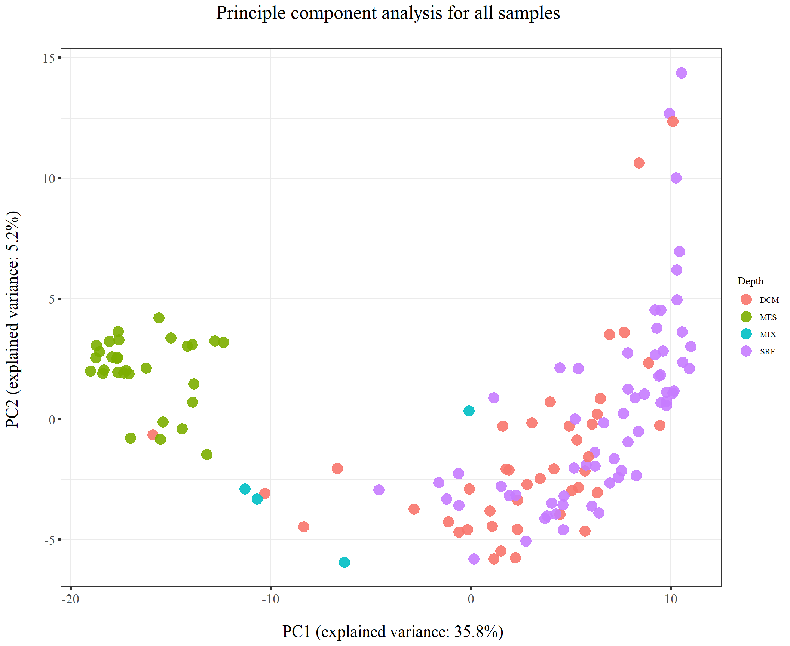
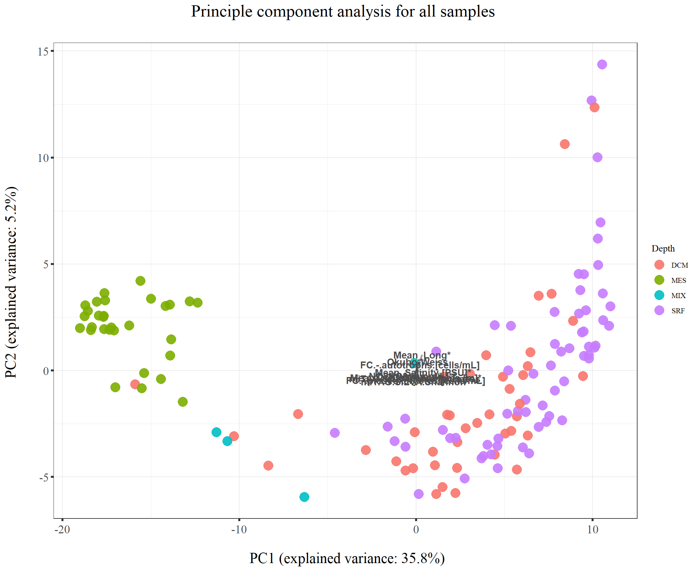
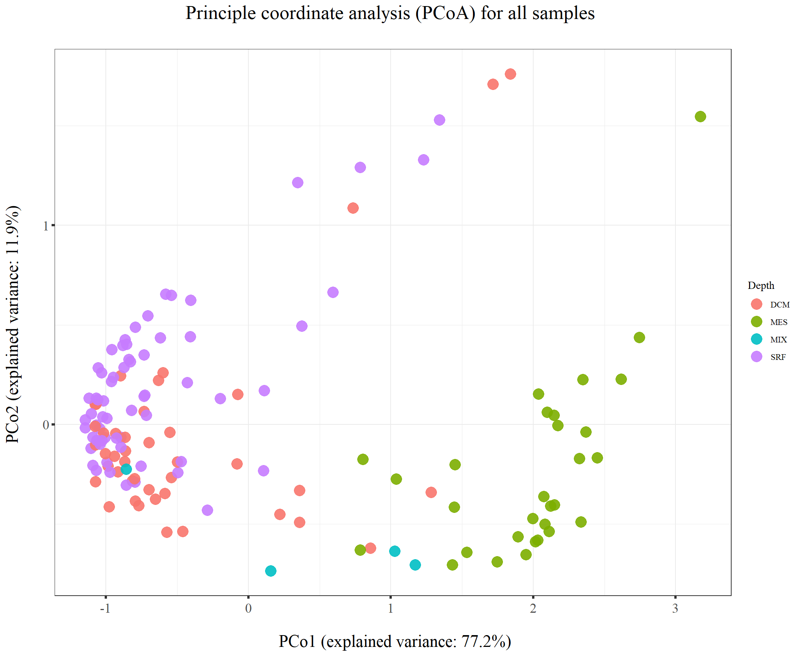
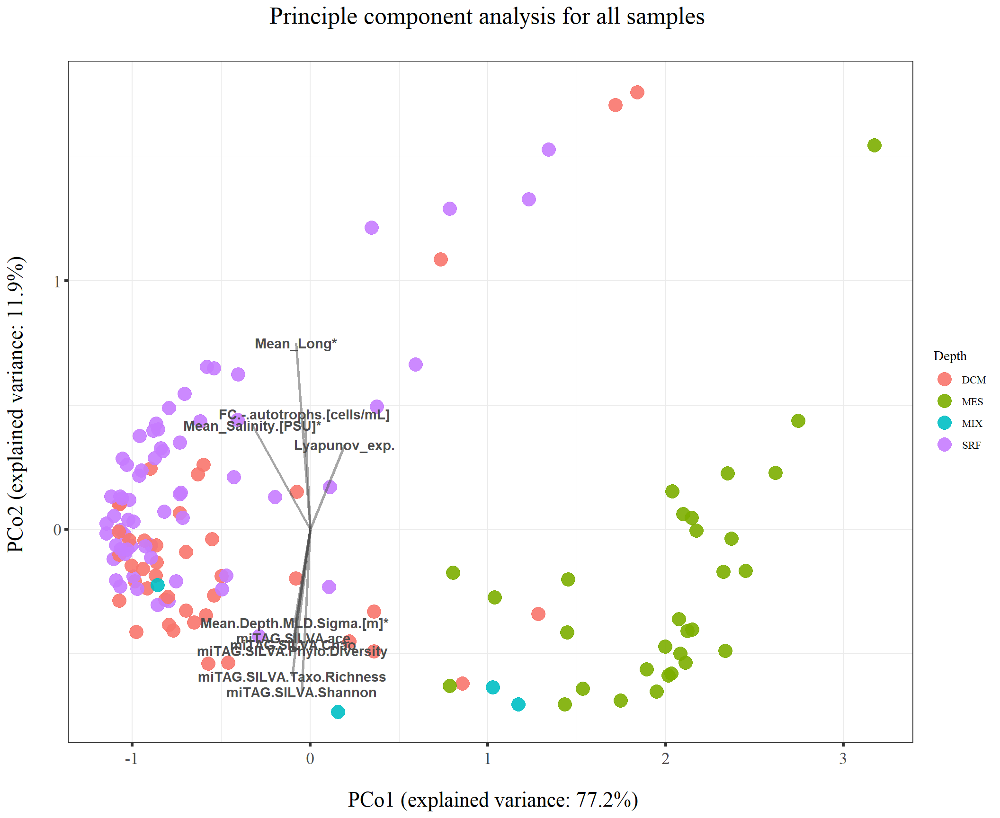
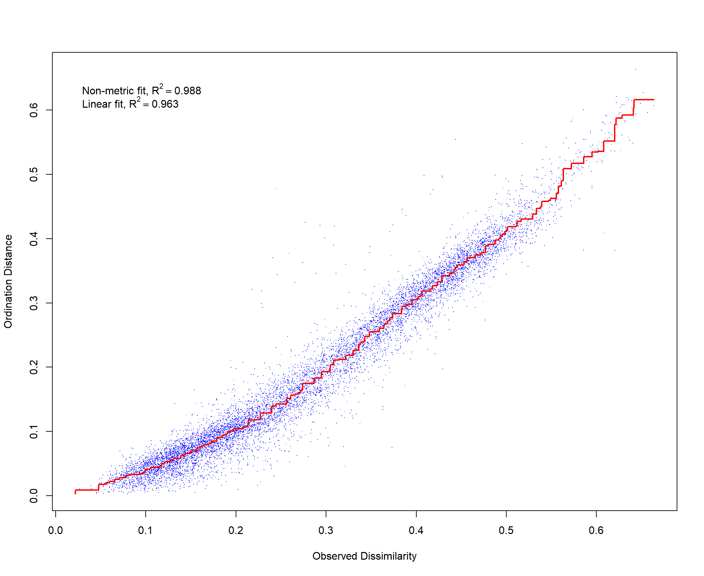
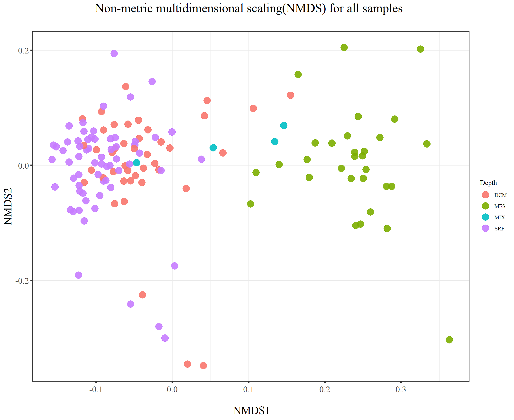
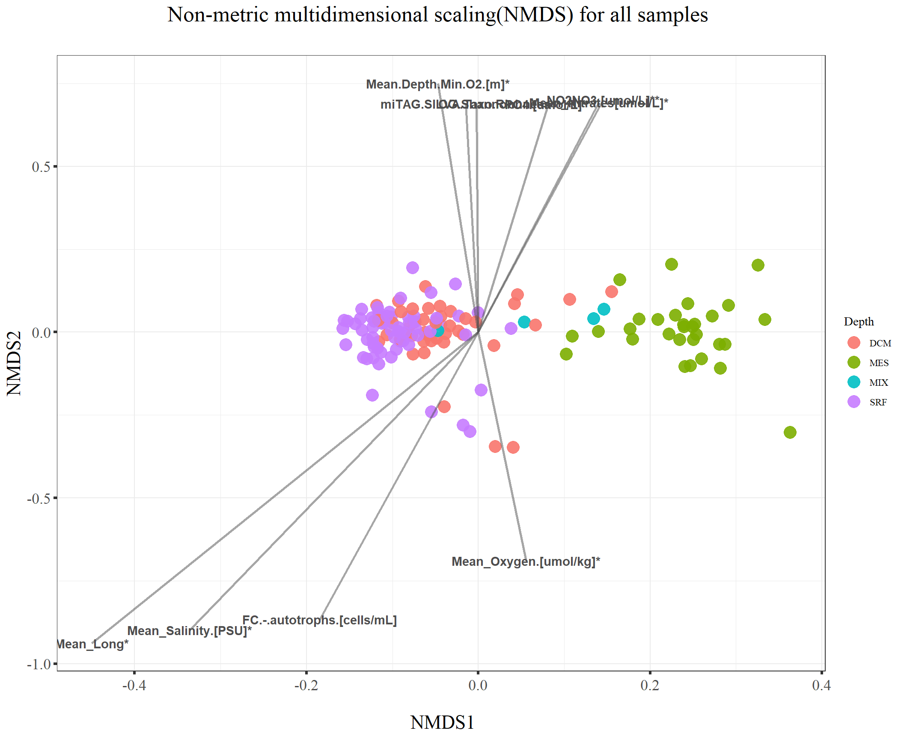
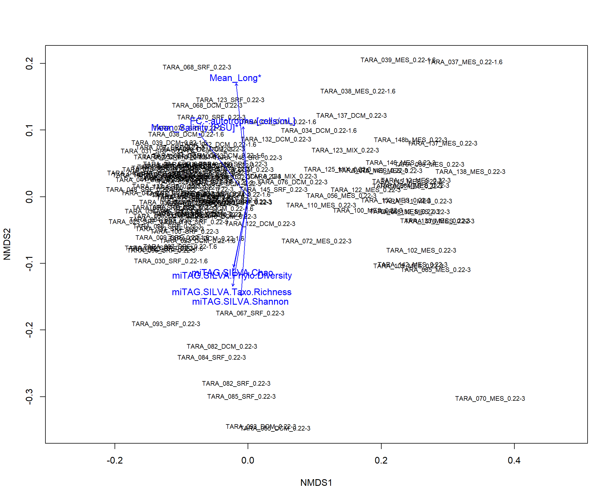

Last updated: 2022-04-05
Checks: 7 0
Knit directory: QME/
This reproducible R Markdown analysis was created with workflowr (version 1.6.2). The Checks tab describes the reproducibility checks that were applied when the results were created. The Past versions tab lists the development history.
Great! Since the R Markdown file has been committed to the Git repository, you know the exact version of the code that produced these results.
Great job! The global environment was empty. Objects defined in the global environment can affect the analysis in your R Markdown file in unknown ways. For reproduciblity it’s best to always run the code in an empty environment.
The command set.seed(20220403) was run prior to running the code in the R Markdown file. Setting a seed ensures that any results that rely on randomness, e.g. subsampling or permutations, are reproducible.
Great job! Recording the operating system, R version, and package versions is critical for reproducibility.
Nice! There were no cached chunks for this analysis, so you can be confident that you successfully produced the results during this run.
Great job! Using relative paths to the files within your workflowr project makes it easier to run your code on other machines.
Great! You are using Git for version control. Tracking code development and connecting the code version to the results is critical for reproducibility.
The results in this page were generated with repository version a236075. See the Past versions tab to see a history of the changes made to the R Markdown and HTML files.
Note that you need to be careful to ensure that all relevant files for the analysis have been committed to Git prior to generating the results (you can use wflow_publish or wflow_git_commit). workflowr only checks the R Markdown file, but you know if there are other scripts or data files that it depends on. Below is the status of the Git repository when the results were generated:
Ignored files:
Ignored: .Rproj.user/
Untracked files:
Untracked: Sample.label_metadata.xlsx
Untracked: data/OM.CompanionTables.xlsx
Untracked: data/Sample.label_metadata.xlsx
Untracked: data/miTAG.taxonomic.profiles.release.tsv
Note that any generated files, e.g. HTML, png, CSS, etc., are not included in this status report because it is ok for generated content to have uncommitted changes.
These are the previous versions of the repository in which changes were made to the R Markdown (analysis/220406_class_activity_import_data.Rmd) and HTML (docs/220406_class_activity_import_data.html) files. If you’ve configured a remote Git repository (see ?wflow_git_remote), click on the hyperlinks in the table below to view the files as they were in that past version.
| File | Version | Author | Date | Message |
|---|---|---|---|---|
| Rmd | a236075 | KiseokLee | 2022-04-05 | wflow_publish("analysis/*.Rmd") |
TA: Kiseok Lee
Date: 4/6/22
Class: ECEV 36500 Quantitative microbial ecology (Seppe Kuehn)
# libraries
library(dplyr)
library(ggplot2)
library(RColorBrewer)
library(vegan)
library(tidyverse)
library(magrittr)
library(readxl)
library(reshape2)
library(gtools)
library(devtools)
library(openxlsx)
library(ape)
library(stringr)
library(tidyr)
mytheme_2d <- theme_bw() +
theme(text = element_text(family="serif")) +
theme(plot.title = element_text(size = 19,hjust = 0.5, family="serif")) +
theme(axis.title.x = element_text(size = 17,hjust = 0.5, family="serif")) +
theme(axis.title.y = element_text(size = 17,hjust = 0.5, family="serif")) +
theme(axis.text.x = element_text(hjust = 0.5, vjust=0.3,size=13, family="serif"))+
theme(axis.text.y = element_text(size=13, family="serif"))+
# theme(panel.grid.major = element_blank()) +
# theme(panel.grid.minor = element_blank(),panel.background=element_blank(),plot.background=element_blank()) +
theme(axis.ticks = element_line(size = 1.1))## change accordingly to your directory
# this is metadata (env variable, diversity, biomass, etc information is here)
df_meta <- openxlsx::read.xlsx("data/Sample.label_metadata.xlsx")
dim(df_meta) # 243 samples[1] 243 38head(df_meta) Sample.label PANGAEA.Sample.ID Mean_Date.[YY/MM/DD.hh:mm]* Mean_Lat*
1 TARA_004_DCM_0.22-1.6 TARA_X000000368 40071.70 36.57300
2 TARA_004_SRF_0.22-1.6 TARA_Y200000002 40071.43 36.55333
3 TARA_007_DCM_0.22-1.6 TARA_A200000159 40079.70 37.03868
4 TARA_007_SRF_0.22-1.6 TARA_A200000113 40079.63 37.02107
5 TARA_009_DCM_0.22-1.6 TARA_X000001036 40084.57 39.07340
6 TARA_009_SRF_0.22-1.6 TARA_X000000950 40084.57 39.07340
Mean_Long* Mean_Depth.[m]* Mean_Temperature.[deg.C]* Mean_Salinity.[PSU]*
1 -6.538667 38.689029 16.24633 36.55644
2 -6.566833 10.000000 20.52510 36.63240
3 1.949833 41.740393 17.36746 NA
4 1.949467 7.500000 23.82575 37.49110
5 5.859833 55.000000 16.15193 37.82320
6 5.859833 5.784381 23.85260 37.97510
Mean_Oxygen.[umol/kg]* Mean_Nitrates[umol/L]* NO2.[umol/L]** PO4.[umol/L]**
1 NA NA NA NA
2 NA NA NA NA
3 NA NA 0.00 0.01
4 NA NA 0.00 0.06
5 NA NA 0.02 0.02
6 NA NA 0.01 0.02
NO2NO3.[umol/L]** SI.[umol/L]** AMODIS:PAR8d,Einsteins/m-2/d-1 Okubo-Weiss
1 NA NA 37.643 0.007355
2 NA NA 39.916 0.007355
3 0.03 0.50 29.931 -0.794335
4 0.03 0.52 29.931 -0.794335
5 0.08 0.60 26.661 -0.773622
6 0.03 0.75 26.661 -0.773622
Lyapunov_exp. grad_SST_adv retention Mean.Depth.MLD.Sigma.[m]*
1 0.023383 NA 0.000000 3.5
2 0.023383 NA 0.000000 3.5
3 0.000000 NA 4.916667 18.0
4 0.000000 NA 4.916667 18.0
5 0.082940 0.690694 13.611111 21.0
6 0.082940 0.690694 13.611111 21.0
Mean.Depth.Max.Fluo.[m]* Mean.Depth.Max.N2.[m]* Mean.Depth.Max.O2.[m]*
1 38.00000 17.5 NA
2 38.00000 17.5 NA
3 44.33333 40.5 NA
4 44.33333 40.5 NA
5 52.50000 34.5 NA
6 52.50000 34.5 NA
Mean.Depth.Min.O2.[m]* Mean.Depth.Nitracline.[m]* miTAG.SILVA.Taxo.Richness
1 NA NA 3054.63
2 NA NA 2717.74
3 NA NA 3134.91
4 NA NA 2591.99
5 NA NA 3228.86
6 NA NA 2740.60
miTAG.SILVA.Phylo.Diversity miTAG.SILVA.Chao miTAG.SILVA.ace
1 451.0603 4173.587 4030.463
2 406.1298 3762.955 3680.078
3 483.2581 4786.076 4585.078
4 400.9745 3872.353 3729.129
5 473.3118 4462.686 4296.565
6 413.5093 3982.790 3865.446
miTAG.SILVA.Shannon OG.Shannon OG.Richness OG.Evenness
1 6.849891 7.160451 14607.3 0.7467149
2 6.635941 7.145722 14590.9 0.7452660
3 6.801171 7.279688 16416.5 0.7500163
4 6.525141 7.201536 15495.1 0.7464064
5 6.907613 7.154407 15318.4 0.7424042
6 6.624968 7.222911 15315.1 0.7495296
FC.-.heterotrophs.[cells/mL] FC.-.autotrophs.[cells/mL]
1 1226212.2 56383.47
2 839530.6 54593.19
3 2580789.0 156124.58
4 1004684.1 50585.64
5 781038.7 19831.96
6 901463.2 39329.53
FC.-.bacteria.[cells/mL] FC.-.picoeukaryotes.[cells/mL]
1 1282595.7 6889.9384
2 894123.8 1221.8898
3 2736913.6 1859.1433
4 1055269.8 812.6444
5 800870.7 2882.2568
6 940792.7 1230.6593
minimum.generation.time.[h]
1 11.12740
2 15.23070
3 14.37019
4 14.28710
5 10.69975
6 17.47472# this is the OTU read abundance in each sample (OTU is the Operational Taxonomy Unit, think of it as putative species)
df_sample <- read_tsv("data/miTAG.taxonomic.profiles.release.tsv")
dim(df_sample) # 139 sample[1] 35651 146head(df_sample)# A tibble: 6 x 146
Domain Phylum Class Order Family Genus OTU.rep `TARA_018_DCM_0.~
<chr> <chr> <chr> <chr> <chr> <chr> <chr> <dbl>
1 undef undef undef undef undef undef unclassi~ 5101
2 Bacter~ Proteob~ Alphapr~ Rhodos~ Rhodos~ AEGEAN-~ AACY0241~ 1021
3 Bacter~ Cyanoba~ Cyanoba~ Subsec~ FamilyI Prochlo~ KC003383~ 2697
4 Bacter~ Proteob~ Alphapr~ Rhodos~ Rhodos~ AEGEAN-~ EU394547~ 605
5 Bacter~ Cyanoba~ Cyanoba~ Subsec~ FamilyI Prochlo~ X52169.1~ 3786
6 Bacter~ Cyanoba~ Cyanoba~ Subsec~ FamilyI Prochlo~ EU802966~ 530
# ... with 138 more variables: TARA_018_SRF_0.22-1.6 <dbl>,
# TARA_023_DCM_0.22-1.6 <dbl>, TARA_023_SRF_0.22-1.6 <dbl>,
# TARA_025_DCM_0.22-1.6 <dbl>, TARA_025_SRF_0.22-1.6 <dbl>,
# TARA_030_DCM_0.22-1.6 <dbl>, TARA_030_SRF_0.22-1.6 <dbl>,
# TARA_031_SRF_0.22-1.6 <dbl>, TARA_032_DCM_0.22-1.6 <dbl>,
# TARA_032_SRF_0.22-1.6 <dbl>, TARA_033_SRF_0.22-1.6 <dbl>,
# TARA_034_DCM_0.22-1.6 <dbl>, TARA_034_SRF_0.22-1.6 <dbl>,
# TARA_036_DCM_0.22-1.6 <dbl>, TARA_036_SRF_0.22-1.6 <dbl>,
# TARA_037_MES_0.22-1.6 <dbl>, TARA_038_DCM_0.22-1.6 <dbl>,
# TARA_038_MES_0.22-1.6 <dbl>, TARA_038_SRF_0.22-1.6 <dbl>,
# TARA_039_DCM_0.22-1.6 <dbl>, TARA_039_MES_0.22-1.6 <dbl>,
# TARA_041_DCM_0.22-1.6 <dbl>, TARA_041_SRF_0.22-1.6 <dbl>,
# TARA_042_DCM_0.22-1.6 <dbl>, TARA_042_SRF_0.22-1.6 <dbl>,
# TARA_045_SRF_0.22-1.6 <dbl>, TARA_048_SRF_0.22-1.6 <dbl>,
# TARA_004_DCM_0.22-1.6 <dbl>, TARA_004_SRF_0.22-1.6 <dbl>,
# TARA_052_DCM_0.22-1.6 <dbl>, TARA_052_SRF_0.22-1.6 <dbl>,
# TARA_007_DCM_0.22-1.6 <dbl>, TARA_007_SRF_0.22-1.6 <dbl>,
# TARA_009_DCM_0.22-1.6 <dbl>, TARA_009_SRF_0.22-1.6 <dbl>,
# TARA_100_DCM_0.22-3 <dbl>, TARA_100_MES_0.22-3 <dbl>,
# TARA_100_SRF_0.22-3 <dbl>, TARA_102_DCM_0.22-3 <dbl>,
# TARA_102_MES_0.22-3 <dbl>, TARA_102_SRF_0.22-3 <dbl>,
# TARA_109_DCM_0.22-3 <dbl>, TARA_109_MES_0.22-3 <dbl>,
# TARA_109_SRF_0.22-3 <dbl>, TARA_110_DCM_0.22-3 <dbl>,
# TARA_110_MES_0.22-3 <dbl>, TARA_110_SRF_0.22-3 <dbl>,
# TARA_111_DCM_0.22-3 <dbl>, TARA_111_MES_0.22-3 <dbl>,
# TARA_111_SRF_0.22-3 <dbl>, TARA_112_DCM_0.22-3 <dbl>,
# TARA_112_MES_0.22-3 <dbl>, TARA_112_SRF_0.22-3 <dbl>,
# TARA_122_DCM_0.22-3 <dbl>, TARA_122_MES_0.22-3 <dbl>,
# TARA_122_SRF_0.22-3 <dbl>, TARA_123_MIX_0.22-3 <dbl>,
# TARA_123_SRF_0.22-3 <dbl>, TARA_124_MIX_0.22-3 <dbl>,
# TARA_124_SRF_0.22-3 <dbl>, TARA_125_MIX_0.22-3 <dbl>,
# TARA_125_SRF_0.22-3 <dbl>, TARA_128_DCM_0.22-3 <dbl>,
# TARA_128_SRF_0.22-3 <dbl>, TARA_132_DCM_0.22-3 <dbl>,
# TARA_132_MES_0.22-3 <dbl>, TARA_132_SRF_0.22-3 <dbl>,
# TARA_133_DCM_0.22-3 <dbl>, TARA_133_MES_0.22-3 <dbl>,
# TARA_133_SRF_0.22-3 <dbl>, TARA_137_DCM_0.22-3 <dbl>,
# TARA_137_MES_0.22-3 <dbl>, TARA_137_SRF_0.22-3 <dbl>,
# TARA_138_DCM_0.22-3 <dbl>, TARA_138_MES_0.22-3 <dbl>,
# TARA_138_SRF_0.22-3 <dbl>, TARA_140_SRF_0.22-3 <dbl>,
# TARA_141_SRF_0.22-3 <dbl>, TARA_142_DCM_0.22-3 <dbl>,
# TARA_142_MES_0.22-3 <dbl>, TARA_142_SRF_0.22-3 <dbl>,
# TARA_145_MES_0.22-3 <dbl>, TARA_145_SRF_0.22-3 <dbl>,
# TARA_146_MES_0.22-3 <dbl>, TARA_146_SRF_0.22-3 <dbl>,
# TARA_148b_MES_0.22-3 <dbl>, TARA_148_SRF_0.22-3 <dbl>,
# TARA_149_MES_0.22-3 <dbl>, TARA_149_SRF_0.22-3 <dbl>,
# TARA_150_DCM_0.22-3 <dbl>, TARA_150_SRF_0.22-3 <dbl>,
# TARA_151_DCM_0.22-3 <dbl>, TARA_151_SRF_0.22-3 <dbl>,
# TARA_152_MIX_0.22-3 <dbl>, TARA_152_MES_0.22-3 <dbl>,
# TARA_152_SRF_0.22-3 <dbl>, TARA_056_MES_0.22-3 <dbl>,
# TARA_056_SRF_0.22-3 <dbl>, TARA_057_SRF_0.22-3 <dbl>,
# TARA_058_DCM_0.22-3 <dbl>, ...colnames(df_sample) [1] "Domain" "Phylum" "Class"
[4] "Order" "Family" "Genus"
[7] "OTU.rep" "TARA_018_DCM_0.22-1.6" "TARA_018_SRF_0.22-1.6"
[10] "TARA_023_DCM_0.22-1.6" "TARA_023_SRF_0.22-1.6" "TARA_025_DCM_0.22-1.6"
[13] "TARA_025_SRF_0.22-1.6" "TARA_030_DCM_0.22-1.6" "TARA_030_SRF_0.22-1.6"
[16] "TARA_031_SRF_0.22-1.6" "TARA_032_DCM_0.22-1.6" "TARA_032_SRF_0.22-1.6"
[19] "TARA_033_SRF_0.22-1.6" "TARA_034_DCM_0.22-1.6" "TARA_034_SRF_0.22-1.6"
[22] "TARA_036_DCM_0.22-1.6" "TARA_036_SRF_0.22-1.6" "TARA_037_MES_0.22-1.6"
[25] "TARA_038_DCM_0.22-1.6" "TARA_038_MES_0.22-1.6" "TARA_038_SRF_0.22-1.6"
[28] "TARA_039_DCM_0.22-1.6" "TARA_039_MES_0.22-1.6" "TARA_041_DCM_0.22-1.6"
[31] "TARA_041_SRF_0.22-1.6" "TARA_042_DCM_0.22-1.6" "TARA_042_SRF_0.22-1.6"
[34] "TARA_045_SRF_0.22-1.6" "TARA_048_SRF_0.22-1.6" "TARA_004_DCM_0.22-1.6"
[37] "TARA_004_SRF_0.22-1.6" "TARA_052_DCM_0.22-1.6" "TARA_052_SRF_0.22-1.6"
[40] "TARA_007_DCM_0.22-1.6" "TARA_007_SRF_0.22-1.6" "TARA_009_DCM_0.22-1.6"
[43] "TARA_009_SRF_0.22-1.6" "TARA_100_DCM_0.22-3" "TARA_100_MES_0.22-3"
[46] "TARA_100_SRF_0.22-3" "TARA_102_DCM_0.22-3" "TARA_102_MES_0.22-3"
[49] "TARA_102_SRF_0.22-3" "TARA_109_DCM_0.22-3" "TARA_109_MES_0.22-3"
[52] "TARA_109_SRF_0.22-3" "TARA_110_DCM_0.22-3" "TARA_110_MES_0.22-3"
[55] "TARA_110_SRF_0.22-3" "TARA_111_DCM_0.22-3" "TARA_111_MES_0.22-3"
[58] "TARA_111_SRF_0.22-3" "TARA_112_DCM_0.22-3" "TARA_112_MES_0.22-3"
[61] "TARA_112_SRF_0.22-3" "TARA_122_DCM_0.22-3" "TARA_122_MES_0.22-3"
[64] "TARA_122_SRF_0.22-3" "TARA_123_MIX_0.22-3" "TARA_123_SRF_0.22-3"
[67] "TARA_124_MIX_0.22-3" "TARA_124_SRF_0.22-3" "TARA_125_MIX_0.22-3"
[70] "TARA_125_SRF_0.22-3" "TARA_128_DCM_0.22-3" "TARA_128_SRF_0.22-3"
[73] "TARA_132_DCM_0.22-3" "TARA_132_MES_0.22-3" "TARA_132_SRF_0.22-3"
[76] "TARA_133_DCM_0.22-3" "TARA_133_MES_0.22-3" "TARA_133_SRF_0.22-3"
[79] "TARA_137_DCM_0.22-3" "TARA_137_MES_0.22-3" "TARA_137_SRF_0.22-3"
[82] "TARA_138_DCM_0.22-3" "TARA_138_MES_0.22-3" "TARA_138_SRF_0.22-3"
[85] "TARA_140_SRF_0.22-3" "TARA_141_SRF_0.22-3" "TARA_142_DCM_0.22-3"
[88] "TARA_142_MES_0.22-3" "TARA_142_SRF_0.22-3" "TARA_145_MES_0.22-3"
[91] "TARA_145_SRF_0.22-3" "TARA_146_MES_0.22-3" "TARA_146_SRF_0.22-3"
[94] "TARA_148b_MES_0.22-3" "TARA_148_SRF_0.22-3" "TARA_149_MES_0.22-3"
[97] "TARA_149_SRF_0.22-3" "TARA_150_DCM_0.22-3" "TARA_150_SRF_0.22-3"
[100] "TARA_151_DCM_0.22-3" "TARA_151_SRF_0.22-3" "TARA_152_MIX_0.22-3"
[103] "TARA_152_MES_0.22-3" "TARA_152_SRF_0.22-3" "TARA_056_MES_0.22-3"
[106] "TARA_056_SRF_0.22-3" "TARA_057_SRF_0.22-3" "TARA_058_DCM_0.22-3"
[109] "TARA_062_SRF_0.22-3" "TARA_064_DCM_0.22-3" "TARA_064_MES_0.22-3"
[112] "TARA_064_SRF_0.22-3" "TARA_065_DCM_0.22-3" "TARA_065_MES_0.22-3"
[115] "TARA_065_SRF_0.22-3" "TARA_066_DCM_0.22-3" "TARA_066_SRF_0.22-3"
[118] "TARA_067_SRF_0.22-3" "TARA_068_DCM_0.22-3" "TARA_068_MES_0.22-3"
[121] "TARA_068_SRF_0.22-3" "TARA_070_MES_0.22-3" "TARA_070_SRF_0.22-3"
[124] "TARA_072_DCM_0.22-3" "TARA_072_MES_0.22-3" "TARA_072_SRF_0.22-3"
[127] "TARA_076_DCM_0.22-3" "TARA_076_MES_0.22-3" "TARA_076_SRF_0.22-3"
[130] "TARA_078_DCM_0.22-3" "TARA_078_MES_0.22-3" "TARA_078_SRF_0.22-3"
[133] "TARA_082_DCM_0.22-3" "TARA_082_SRF_0.22-3" "TARA_084_SRF_0.22-3"
[136] "TARA_085_DCM_0.22-3" "TARA_085_MES_0.22-3" "TARA_085_SRF_0.22-3"
[139] "TARA_093_DCM_0.22-3" "TARA_093_SRF_0.22-3" "TARA_094_SRF_0.22-3"
[142] "TARA_096_SRF_0.22-3" "TARA_098_DCM_0.22-3" "TARA_098_MES_0.22-3"
[145] "TARA_098_SRF_0.22-3" "TARA_099_SRF_0.22-3" # Agglomerate reads on taxonomic levels
vec_sample <- colnames(df_sample)[grepl("TARA*",colnames(df_sample))]
length(vec_sample) # 139 samples[1] 139taxa_level = "Class"
df_taxa_level <- df_sample %>% select(taxa_level, vec_sample)
# add up the read abundance in each taxa in each sample
df_taxa_aggre <- aggregate(df_taxa_level[,2:ncol(df_taxa_level)], by = df_taxa_level[1], function(x) sum(x, na.rm = TRUE))
dim(df_taxa_aggre)[1] 147 140head(df_taxa_aggre) Class TARA_018_DCM_0.22-1.6 TARA_018_SRF_0.22-1.6
1 028H05-P-BN-P5 0 0
2 4C0d-2 0 0
3 AB64A-17 0 0
4 Acidimicrobiia 3712 4668
5 Acidobacteria 6 14
6 Actinobacteria 192 276
TARA_023_DCM_0.22-1.6 TARA_023_SRF_0.22-1.6 TARA_025_DCM_0.22-1.6
1 0 0 0
2 0 0 0
3 0 0 0
4 2417 1511 3123
5 4 8 9
6 146 158 130
TARA_025_SRF_0.22-1.6 TARA_030_DCM_0.22-1.6 TARA_030_SRF_0.22-1.6
1 0 0 0
2 0 0 0
3 0 0 0
4 1448 5055 2518
5 7 10 1
6 304 135 99
TARA_031_SRF_0.22-1.6 TARA_032_DCM_0.22-1.6 TARA_032_SRF_0.22-1.6
1 0 0 0
2 0 0 0
3 0 0 0
4 3340 3642 4355
5 4 101 1
6 259 232 111
TARA_033_SRF_0.22-1.6 TARA_034_DCM_0.22-1.6 TARA_034_SRF_0.22-1.6
1 0 0 0
2 0 0 0
3 0 1 0
4 2940 1717 3385
5 2 135 1
6 23 76 29
TARA_036_DCM_0.22-1.6 TARA_036_SRF_0.22-1.6 TARA_037_MES_0.22-1.6
1 0 0 0
2 0 0 0
3 0 0 0
4 3275 1739 4055
5 8 2 726
6 54 35 84
TARA_038_DCM_0.22-1.6 TARA_038_MES_0.22-1.6 TARA_038_SRF_0.22-1.6
1 0 0 0
2 0 0 0
3 0 0 0
4 3581 2263 2939
5 2 261 0
6 49 31 46
TARA_039_DCM_0.22-1.6 TARA_039_MES_0.22-1.6 TARA_041_DCM_0.22-1.6
1 0 0 0
2 0 1 1
3 0 0 0
4 3565 3780 4453
5 1 441 6
6 77 36 52
TARA_041_SRF_0.22-1.6 TARA_042_DCM_0.22-1.6 TARA_042_SRF_0.22-1.6
1 0 0 0
2 0 0 0
3 0 0 0
4 4903 4795 4942
5 4 6 3
6 206 66 403
TARA_045_SRF_0.22-1.6 TARA_048_SRF_0.22-1.6 TARA_004_DCM_0.22-1.6
1 0 0 0
2 0 0 0
3 0 0 0
4 4328 4807 6432
5 1 1 8
6 208 255 107
TARA_004_SRF_0.22-1.6 TARA_052_DCM_0.22-1.6 TARA_052_SRF_0.22-1.6
1 0 0 0
2 1 0 0
3 0 0 0
4 1961 3971 2515
5 3 2 4
6 142 122 130
TARA_007_DCM_0.22-1.6 TARA_007_SRF_0.22-1.6 TARA_009_DCM_0.22-1.6
1 0 0 0
2 0 0 0
3 0 0 0
4 3176 2504 5574
5 6 4 5
6 141 90 113
TARA_009_SRF_0.22-1.6 TARA_100_DCM_0.22-3 TARA_100_MES_0.22-3
1 0 0 3
2 0 0 0
3 0 0 0
4 3009 3252 3457
5 4 3 302
6 183 128 123
TARA_100_SRF_0.22-3 TARA_102_DCM_0.22-3 TARA_102_MES_0.22-3
1 0 0 1
2 0 1 0
3 0 0 0
4 2808 6998 1548
5 0 9 158
6 55 155 25
TARA_102_SRF_0.22-3 TARA_109_DCM_0.22-3 TARA_109_MES_0.22-3
1 0 0 6
2 0 0 0
3 0 0 1
4 2859 3320 2263
5 3 4 356
6 63 53 127
TARA_109_SRF_0.22-3 TARA_110_DCM_0.22-3 TARA_110_MES_0.22-3
1 0 0 0
2 0 1 0
3 0 0 0
4 5758 4139 3148
5 6 2 258
6 80 94 154
TARA_110_SRF_0.22-3 TARA_111_DCM_0.22-3 TARA_111_MES_0.22-3
1 0 0 0
2 0 0 0
3 0 0 0
4 3926 3987 2705
5 1 5 604
6 74 97 115
TARA_111_SRF_0.22-3 TARA_112_DCM_0.22-3 TARA_112_MES_0.22-3
1 0 0 0
2 0 0 0
3 0 0 0
4 2922 3159 1201
5 6 12 1095
6 96 293 816
TARA_112_SRF_0.22-3 TARA_122_DCM_0.22-3 TARA_122_MES_0.22-3
1 0 0 0
2 1 0 0
3 0 0 0
4 2700 3182 3327
5 9 14 636
6 163 244 1500
TARA_122_SRF_0.22-3 TARA_123_MIX_0.22-3 TARA_123_SRF_0.22-3
1 0 0 0
2 0 0 0
3 0 0 0
4 3434 2937 3189
5 1 361 6
6 75 319 145
TARA_124_MIX_0.22-3 TARA_124_SRF_0.22-3 TARA_125_MIX_0.22-3
1 0 0 0
2 0 0 0
3 0 0 0
4 4950 5300 1649
5 43 6 599
6 137 95 277
TARA_125_SRF_0.22-3 TARA_128_DCM_0.22-3 TARA_128_SRF_0.22-3
1 0 0 0
2 0 0 0
3 0 0 0
4 7335 2534 3150
5 0 6 7
6 117 211 252
TARA_132_DCM_0.22-3 TARA_132_MES_0.22-3 TARA_132_SRF_0.22-3
1 0 1 0
2 0 0 0
3 0 1 0
4 4047 2700 2613
5 10 981 3
6 226 354 63
TARA_133_DCM_0.22-3 TARA_133_MES_0.22-3 TARA_133_SRF_0.22-3
1 0 7 0
2 0 0 0
3 0 0 0
4 3530 3486 3034
5 3 619 1
6 256 903 348
TARA_137_DCM_0.22-3 TARA_137_MES_0.22-3 TARA_137_SRF_0.22-3
1 3 2 0
2 0 0 0
3 1 2 0
4 3350 2744 6285
5 443 500 1
6 78 283 117
TARA_138_DCM_0.22-3 TARA_138_MES_0.22-3 TARA_138_SRF_0.22-3
1 0 1 0
2 0 0 0
3 0 0 0
4 3968 2303 4061
5 8 705 7
6 66 105 252
TARA_140_SRF_0.22-3 TARA_141_SRF_0.22-3 TARA_142_DCM_0.22-3
1 0 0 0
2 0 0 0
3 0 0 1
4 6989 3305 3683
5 6 7 17
6 121 84 353
TARA_142_MES_0.22-3 TARA_142_SRF_0.22-3 TARA_145_MES_0.22-3
1 1 0 5
2 2 0 0
3 0 0 0
4 2323 4719 2330
5 401 13 851
6 798 232 1006
TARA_145_SRF_0.22-3 TARA_146_MES_0.22-3 TARA_146_SRF_0.22-3
1 0 0 0
2 0 0 0
3 0 0 0
4 1673 2030 3449
5 9 603 27
6 54 454 56
TARA_148b_MES_0.22-3 TARA_148_SRF_0.22-3 TARA_149_MES_0.22-3
1 0 0 2
2 0 1 0
3 1 0 0
4 1452 4000 2418
5 547 13 840
6 412 65 511
TARA_149_SRF_0.22-3 TARA_150_DCM_0.22-3 TARA_150_SRF_0.22-3
1 0 0 0
2 0 0 0
3 0 0 0
4 4366 4840 4576
5 13 10 5
6 81 179 79
TARA_151_DCM_0.22-3 TARA_151_SRF_0.22-3 TARA_152_MIX_0.22-3
1 0 0 0
2 0 0 0
3 0 0 0
4 4106 5422 3484
5 52 7 11
6 151 91 228
TARA_152_MES_0.22-3 TARA_152_SRF_0.22-3 TARA_056_MES_0.22-3
1 0 0 1
2 0 0 1
3 0 0 0
4 1661 3077 1486
5 1026 6 658
6 619 61 6119
TARA_056_SRF_0.22-3 TARA_057_SRF_0.22-3 TARA_058_DCM_0.22-3
1 0 0 0
2 0 1 0
3 0 0 0
4 3295 4023 4817
5 1 4 8
6 76 52 81
TARA_062_SRF_0.22-3 TARA_064_DCM_0.22-3 TARA_064_MES_0.22-3
1 0 0 2
2 0 0 0
3 0 0 0
4 2852 6704 1184
5 2 4 667
6 32 70 873
TARA_064_SRF_0.22-3 TARA_065_DCM_0.22-3 TARA_065_MES_0.22-3
1 0 0 3
2 0 0 2
3 0 0 0
4 6492 5822 2650
5 10 30 1081
6 66 374 2123
TARA_065_SRF_0.22-3 TARA_066_DCM_0.22-3 TARA_066_SRF_0.22-3
1 0 0 0
2 0 0 0
3 0 0 0
4 2340 932 2061
5 2 4 6
6 19 23 48
TARA_067_SRF_0.22-3 TARA_068_DCM_0.22-3 TARA_068_MES_0.22-3
1 0 0 4
2 0 0 0
3 0 0 1
4 966 865 3682
5 2 6 911
6 53 30 240
TARA_068_SRF_0.22-3 TARA_070_MES_0.22-3 TARA_070_SRF_0.22-3
1 0 1 0
2 0 0 0
3 0 0 0
4 737 1389 468
5 7 612 1
6 42 226 33
TARA_072_DCM_0.22-3 TARA_072_MES_0.22-3 TARA_072_SRF_0.22-3
1 0 2 0
2 0 0 0
3 0 0 0
4 2426 1532 2087
5 6 170 4
6 40 258 167
TARA_076_DCM_0.22-3 TARA_076_MES_0.22-3 TARA_076_SRF_0.22-3
1 0 0 0
2 0 0 0
3 0 0 0
4 1340 2351 955
5 12 1379 8
6 2451 2010 733
TARA_078_DCM_0.22-3 TARA_078_MES_0.22-3 TARA_078_SRF_0.22-3
1 0 0 0
2 0 0 0
3 0 1 0
4 2355 2006 2121
5 29 735 3
6 196 524 114
TARA_082_DCM_0.22-3 TARA_082_SRF_0.22-3 TARA_084_SRF_0.22-3
1 0 0 0
2 0 0 0
3 0 0 0
4 148 107 81
5 2 0 0
6 59 23 101
TARA_085_DCM_0.22-3 TARA_085_MES_0.22-3 TARA_085_SRF_0.22-3
1 0 20 0
2 0 0 0
3 0 0 0
4 37 2303 42
5 0 476 0
6 50 434 52
TARA_093_DCM_0.22-3 TARA_093_SRF_0.22-3 TARA_094_SRF_0.22-3
1 0 0 0
2 0 0 0
3 0 0 0
4 652 307 2478
5 15 5 7
6 265 116 133
TARA_096_SRF_0.22-3 TARA_098_DCM_0.22-3 TARA_098_MES_0.22-3
1 0 0 0
2 0 0 0
3 0 0 0
4 2405 2645 1846
5 3 4 1384
6 152 80 83
TARA_098_SRF_0.22-3 TARA_099_SRF_0.22-3
1 0 1
2 0 0
3 0 0
4 1474 1987
5 3 2
6 39 57# get relative abundance
df_rel_abun <- df_taxa_aggre
df_rel_abun <- tibble::column_to_rownames(df_rel_abun, var=taxa_level)
df_rel_abun <- apply(df_rel_abun, 2, function(i) i/sum(i))
apply(df_rel_abun, 2, sum) # sum of each sample is 1TARA_018_DCM_0.22-1.6 TARA_018_SRF_0.22-1.6 TARA_023_DCM_0.22-1.6
1 1 1
TARA_023_SRF_0.22-1.6 TARA_025_DCM_0.22-1.6 TARA_025_SRF_0.22-1.6
1 1 1
TARA_030_DCM_0.22-1.6 TARA_030_SRF_0.22-1.6 TARA_031_SRF_0.22-1.6
1 1 1
TARA_032_DCM_0.22-1.6 TARA_032_SRF_0.22-1.6 TARA_033_SRF_0.22-1.6
1 1 1
TARA_034_DCM_0.22-1.6 TARA_034_SRF_0.22-1.6 TARA_036_DCM_0.22-1.6
1 1 1
TARA_036_SRF_0.22-1.6 TARA_037_MES_0.22-1.6 TARA_038_DCM_0.22-1.6
1 1 1
TARA_038_MES_0.22-1.6 TARA_038_SRF_0.22-1.6 TARA_039_DCM_0.22-1.6
1 1 1
TARA_039_MES_0.22-1.6 TARA_041_DCM_0.22-1.6 TARA_041_SRF_0.22-1.6
1 1 1
TARA_042_DCM_0.22-1.6 TARA_042_SRF_0.22-1.6 TARA_045_SRF_0.22-1.6
1 1 1
TARA_048_SRF_0.22-1.6 TARA_004_DCM_0.22-1.6 TARA_004_SRF_0.22-1.6
1 1 1
TARA_052_DCM_0.22-1.6 TARA_052_SRF_0.22-1.6 TARA_007_DCM_0.22-1.6
1 1 1
TARA_007_SRF_0.22-1.6 TARA_009_DCM_0.22-1.6 TARA_009_SRF_0.22-1.6
1 1 1
TARA_100_DCM_0.22-3 TARA_100_MES_0.22-3 TARA_100_SRF_0.22-3
1 1 1
TARA_102_DCM_0.22-3 TARA_102_MES_0.22-3 TARA_102_SRF_0.22-3
1 1 1
TARA_109_DCM_0.22-3 TARA_109_MES_0.22-3 TARA_109_SRF_0.22-3
1 1 1
TARA_110_DCM_0.22-3 TARA_110_MES_0.22-3 TARA_110_SRF_0.22-3
1 1 1
TARA_111_DCM_0.22-3 TARA_111_MES_0.22-3 TARA_111_SRF_0.22-3
1 1 1
TARA_112_DCM_0.22-3 TARA_112_MES_0.22-3 TARA_112_SRF_0.22-3
1 1 1
TARA_122_DCM_0.22-3 TARA_122_MES_0.22-3 TARA_122_SRF_0.22-3
1 1 1
TARA_123_MIX_0.22-3 TARA_123_SRF_0.22-3 TARA_124_MIX_0.22-3
1 1 1
TARA_124_SRF_0.22-3 TARA_125_MIX_0.22-3 TARA_125_SRF_0.22-3
1 1 1
TARA_128_DCM_0.22-3 TARA_128_SRF_0.22-3 TARA_132_DCM_0.22-3
1 1 1
TARA_132_MES_0.22-3 TARA_132_SRF_0.22-3 TARA_133_DCM_0.22-3
1 1 1
TARA_133_MES_0.22-3 TARA_133_SRF_0.22-3 TARA_137_DCM_0.22-3
1 1 1
TARA_137_MES_0.22-3 TARA_137_SRF_0.22-3 TARA_138_DCM_0.22-3
1 1 1
TARA_138_MES_0.22-3 TARA_138_SRF_0.22-3 TARA_140_SRF_0.22-3
1 1 1
TARA_141_SRF_0.22-3 TARA_142_DCM_0.22-3 TARA_142_MES_0.22-3
1 1 1
TARA_142_SRF_0.22-3 TARA_145_MES_0.22-3 TARA_145_SRF_0.22-3
1 1 1
TARA_146_MES_0.22-3 TARA_146_SRF_0.22-3 TARA_148b_MES_0.22-3
1 1 1
TARA_148_SRF_0.22-3 TARA_149_MES_0.22-3 TARA_149_SRF_0.22-3
1 1 1
TARA_150_DCM_0.22-3 TARA_150_SRF_0.22-3 TARA_151_DCM_0.22-3
1 1 1
TARA_151_SRF_0.22-3 TARA_152_MIX_0.22-3 TARA_152_MES_0.22-3
1 1 1
TARA_152_SRF_0.22-3 TARA_056_MES_0.22-3 TARA_056_SRF_0.22-3
1 1 1
TARA_057_SRF_0.22-3 TARA_058_DCM_0.22-3 TARA_062_SRF_0.22-3
1 1 1
TARA_064_DCM_0.22-3 TARA_064_MES_0.22-3 TARA_064_SRF_0.22-3
1 1 1
TARA_065_DCM_0.22-3 TARA_065_MES_0.22-3 TARA_065_SRF_0.22-3
1 1 1
TARA_066_DCM_0.22-3 TARA_066_SRF_0.22-3 TARA_067_SRF_0.22-3
1 1 1
TARA_068_DCM_0.22-3 TARA_068_MES_0.22-3 TARA_068_SRF_0.22-3
1 1 1
TARA_070_MES_0.22-3 TARA_070_SRF_0.22-3 TARA_072_DCM_0.22-3
1 1 1
TARA_072_MES_0.22-3 TARA_072_SRF_0.22-3 TARA_076_DCM_0.22-3
1 1 1
TARA_076_MES_0.22-3 TARA_076_SRF_0.22-3 TARA_078_DCM_0.22-3
1 1 1
TARA_078_MES_0.22-3 TARA_078_SRF_0.22-3 TARA_082_DCM_0.22-3
1 1 1
TARA_082_SRF_0.22-3 TARA_084_SRF_0.22-3 TARA_085_DCM_0.22-3
1 1 1
TARA_085_MES_0.22-3 TARA_085_SRF_0.22-3 TARA_093_DCM_0.22-3
1 1 1
TARA_093_SRF_0.22-3 TARA_094_SRF_0.22-3 TARA_096_SRF_0.22-3
1 1 1
TARA_098_DCM_0.22-3 TARA_098_MES_0.22-3 TARA_098_SRF_0.22-3
1 1 1
TARA_099_SRF_0.22-3
1 # function for getting relative abundance dataframe for each taxa level
make_df_rel_abun <- function(df_sample, taxa_level = "Class"){
# Agglomerate reads on taxonomic levels
vec_sample <- colnames(df_sample)[grepl("TARA*",colnames(df_sample))]
length(vec_sample) # 139 samples
df_taxa_level <- df_sample %>% select(taxa_level, vec_sample)
# add up the read abundance in each taxa in each sample
df_taxa_aggre <- aggregate(df_taxa_level[,2:ncol(df_taxa_level)], by = df_taxa_level[1], function(x) sum(x, na.rm = TRUE))
dim(df_taxa_aggre)
head(df_taxa_aggre)
# get relative abundance
df_rel_abun <- df_taxa_aggre
df_rel_abun <- tibble::column_to_rownames(df_rel_abun, var=taxa_level)
df_rel_abun <- apply(df_rel_abun, 2, function(i) i/sum(i))
apply(df_rel_abun, 2, sum) # sum of each sample is 1
return(df_rel_abun)
}
# for all taxa level
df_phylum <- make_df_rel_abun(df_sample, taxa_level = "Phylum")
df_class <- make_df_rel_abun(df_sample, taxa_level = "Class")
df_order <- make_df_rel_abun(df_sample, taxa_level = "Order")
df_family <- make_df_rel_abun(df_sample, taxa_level = "Family")
df_genus <- make_df_rel_abun(df_sample, taxa_level = "Genus")
df_otu <- df_sample %>% select(OTU.rep, vec_sample)For compositional data, we applied a logarithmic transformation to relative abundances using the function log10(x + x0), where x is the original relative abundance and x0 is a small constant, and x0 < min(x).
# which taxa level?
df_x = df_class
# do we have any NA in the matrix?
any(is.na(df_x)) # nope[1] FALSE# should we do normalization of relative abundance before ordination?
# Let's do the same as the Sunagawa 2015 paper.
x0 = min(df_x[df_x >0]) * 0.001
df_x_lognorm <- log10(df_x + x0)# PCA with prcomp
pc <- prcomp(t(df_x_lognorm)) # transpose
eigs <- pc$sdev^2
# variance explained
eigs[1] / sum(eigs) # pc1[1] 0.3582933eigs[2] / sum(eigs) # pc2[1] 0.05175907# dataframe for plotting
df_out <- as.data.frame(pc$x) # extract principal components
dim(df_out)[1] 139 139head(df_out) PC1 PC2 PC3 PC4 PC5
TARA_018_DCM_0.22-1.6 6.337351 0.2068551 -0.7412142 0.5730096 -1.159478
TARA_018_SRF_0.22-1.6 1.515106 -2.7977634 -1.9200052 1.9150372 -3.685939
TARA_023_DCM_0.22-1.6 6.060972 -0.2173156 -5.9410764 -1.7586996 -7.267008
TARA_023_SRF_0.22-1.6 8.394363 -0.5135431 -0.2394979 0.2911715 -1.804419
TARA_025_DCM_0.22-1.6 3.459991 -2.4745655 -4.4516613 -0.8003322 -4.140227
TARA_025_SRF_0.22-1.6 9.501753 0.6798853 -1.9175341 -1.7075793 -4.774618
PC6 PC7 PC8 PC9 PC10
TARA_018_DCM_0.22-1.6 3.3940325 -0.6201439 5.464647 -0.44214709 1.372734655
TARA_018_SRF_0.22-1.6 3.8975836 -1.1547829 2.531809 1.16687355 1.145070694
TARA_023_DCM_0.22-1.6 0.8369348 0.8712232 1.867710 -0.07397345 -0.003807296
TARA_023_SRF_0.22-1.6 -1.9914191 -2.0482490 1.082906 -1.67695347 0.276326501
TARA_025_DCM_0.22-1.6 1.7811408 -3.1430699 2.806903 0.61017856 1.337124205
TARA_025_SRF_0.22-1.6 2.1673092 -0.7618143 3.239345 -0.51701924 -1.249718951
PC11 PC12 PC13 PC14 PC15
TARA_018_DCM_0.22-1.6 -2.6015468 0.7282062 -1.9820066 1.3239594 -1.6805349
TARA_018_SRF_0.22-1.6 -1.3485872 1.2358483 -0.6985926 -1.2855298 -1.4766691
TARA_023_DCM_0.22-1.6 1.5630057 -3.3685267 0.7488184 1.1868574 0.5719967
TARA_023_SRF_0.22-1.6 2.2203007 4.6324043 -1.1263123 1.5274467 -2.3521033
TARA_025_DCM_0.22-1.6 1.5084782 -0.8744054 -0.3173954 1.0127594 -1.0178527
TARA_025_SRF_0.22-1.6 0.3425924 1.9037491 -2.6649581 0.9985065 1.9552778
PC16 PC17 PC18 PC19 PC20
TARA_018_DCM_0.22-1.6 -1.3378079 1.5144674 -3.2767877 -1.42624850 0.7049210
TARA_018_SRF_0.22-1.6 -0.9510760 -0.6081927 0.1675794 -0.26977328 -1.1767983
TARA_023_DCM_0.22-1.6 0.5981053 -0.5363000 0.5317591 1.19127980 1.0040717
TARA_023_SRF_0.22-1.6 -0.3154399 1.7951439 2.0536664 0.01515732 0.2218693
TARA_025_DCM_0.22-1.6 -0.7519786 -0.6230426 0.7746774 0.04023637 2.5543477
TARA_025_SRF_0.22-1.6 -0.5213674 -0.5991591 2.8537040 0.29222493 1.1142585
PC21 PC22 PC23 PC24 PC25
TARA_018_DCM_0.22-1.6 -1.0823393 0.9574497 -1.9902366 0.9178182 -3.33957244
TARA_018_SRF_0.22-1.6 -0.6207388 2.3741052 -3.0854031 0.7298171 -2.40872343
TARA_023_DCM_0.22-1.6 0.4792886 -1.5186612 0.6291413 0.4882716 0.30673555
TARA_023_SRF_0.22-1.6 1.1577198 -0.9265793 -4.0627810 2.6706157 -2.45646852
TARA_025_DCM_0.22-1.6 2.2445435 -0.4013120 1.1464736 -2.1720631 2.18880081
TARA_025_SRF_0.22-1.6 2.3653953 -1.6761381 -0.6765511 1.0327120 0.03854233
PC26 PC27 PC28 PC29
TARA_018_DCM_0.22-1.6 0.4293026 -0.8517007 0.01691879 -2.608896773
TARA_018_SRF_0.22-1.6 -0.2273673 0.4745514 -2.43215826 0.174073827
TARA_023_DCM_0.22-1.6 0.8164510 0.3016448 0.30089673 -0.004738265
TARA_023_SRF_0.22-1.6 -0.9541469 0.7371452 2.93871958 0.944508543
TARA_025_DCM_0.22-1.6 -1.6420793 -0.8929645 0.05067631 1.970207468
TARA_025_SRF_0.22-1.6 0.8766127 0.4421843 0.78347450 -0.418234148
PC30 PC31 PC32 PC33 PC34
TARA_018_DCM_0.22-1.6 4.21037489 -1.3735646 0.2799386 -0.2376827 0.02652588
TARA_018_SRF_0.22-1.6 1.09271844 -0.7919186 -0.1682254 2.3008636 -0.49777471
TARA_023_DCM_0.22-1.6 0.04038848 1.0324622 1.4058861 0.4947590 0.70545074
TARA_023_SRF_0.22-1.6 -0.77361235 -1.1613329 3.6512119 0.4623463 -0.40175935
TARA_025_DCM_0.22-1.6 -1.44996380 -0.3296468 -0.9636591 1.6625454 -1.27588553
TARA_025_SRF_0.22-1.6 -1.10510231 1.0080032 1.5852582 0.2743203 -0.19559923
PC35 PC36 PC37 PC38 PC39
TARA_018_DCM_0.22-1.6 -1.15708652 1.1582874 -0.81310549 0.3839171 -2.0879834
TARA_018_SRF_0.22-1.6 -0.11867519 -0.8293321 -0.50137823 -2.4403849 -0.2111246
TARA_023_DCM_0.22-1.6 0.46122219 0.2447160 -0.68390650 -0.4589629 -0.2927418
TARA_023_SRF_0.22-1.6 -0.15832439 3.0675058 0.09130261 0.4306109 0.5363457
TARA_025_DCM_0.22-1.6 -0.54039624 2.7001562 0.76868585 0.3470702 -0.7571646
TARA_025_SRF_0.22-1.6 0.07428498 1.5198024 0.61987089 -0.7596315 0.4192061
PC40 PC41 PC42 PC43
TARA_018_DCM_0.22-1.6 0.74477284 0.3535708 -0.4960003 2.4939766720
TARA_018_SRF_0.22-1.6 2.02370697 1.0239890 -1.1383151 -0.0003250611
TARA_023_DCM_0.22-1.6 0.72625667 -0.3005207 0.6571825 0.1004551320
TARA_023_SRF_0.22-1.6 1.02486827 0.2673099 1.2945862 -0.0477111571
TARA_025_DCM_0.22-1.6 0.51377750 0.7114678 1.0675038 -1.5998940319
TARA_025_SRF_0.22-1.6 -0.06640604 1.1436724 -0.7257930 2.1003134327
PC44 PC45 PC46 PC47 PC48
TARA_018_DCM_0.22-1.6 -0.2456988 -1.19443494 0.05804254 0.3178497 0.56914287
TARA_018_SRF_0.22-1.6 -1.6067815 2.66653359 -0.44186749 0.9534974 -0.58722302
TARA_023_DCM_0.22-1.6 -0.8486220 -0.43911065 0.55623400 -0.3767567 -0.07302174
TARA_023_SRF_0.22-1.6 1.1909858 0.29705174 -0.71073059 -1.2360642 0.95944708
TARA_025_DCM_0.22-1.6 0.2657664 -0.09555595 -0.80219550 1.1507540 -0.95535102
TARA_025_SRF_0.22-1.6 0.3677286 -0.65450467 -0.81886726 -0.8308221 0.51019976
PC49 PC50 PC51 PC52 PC53
TARA_018_DCM_0.22-1.6 -1.0010674 1.39033561 -2.5323912 -0.05986306 -1.50100510
TARA_018_SRF_0.22-1.6 0.4403540 -0.32760527 -0.2870913 -0.27715680 0.96592338
TARA_023_DCM_0.22-1.6 -0.4629155 -0.03957019 -0.7775669 -0.08697307 -0.81362124
TARA_023_SRF_0.22-1.6 0.1066636 -0.25219590 1.6795080 0.83744647 0.20292903
TARA_025_DCM_0.22-1.6 -0.6835370 0.93914147 0.1015714 -0.64745295 -0.02453949
TARA_025_SRF_0.22-1.6 -2.7826894 -0.79294529 0.9112211 -0.80986385 0.77612262
PC54 PC55 PC56 PC57 PC58
TARA_018_DCM_0.22-1.6 2.3483747 0.24891739 -0.8415996 0.03807839 0.6858567
TARA_018_SRF_0.22-1.6 -1.7249535 -0.07308225 1.4725557 0.51048453 -1.0407315
TARA_023_DCM_0.22-1.6 1.4390457 1.02208761 1.4408491 0.01410370 -0.9901848
TARA_023_SRF_0.22-1.6 -0.9720650 -0.39544017 0.4430123 0.12025699 0.1492649
TARA_025_DCM_0.22-1.6 -0.2114217 1.17034861 0.2932778 0.26086987 0.7090828
TARA_025_SRF_0.22-1.6 1.3563335 -0.71719343 -0.5926025 0.44268886 0.6730926
PC59 PC60 PC61 PC62 PC63
TARA_018_DCM_0.22-1.6 -0.1413630 -0.08477500 -0.7350210 0.47909924 0.7374413
TARA_018_SRF_0.22-1.6 -0.9606972 0.07911447 1.3536856 -0.43901580 1.2969491
TARA_023_DCM_0.22-1.6 0.9476950 0.13113606 0.2869763 0.07731872 0.5528554
TARA_023_SRF_0.22-1.6 -0.1443632 -0.47983812 -0.2231760 -0.72992887 0.5056204
TARA_025_DCM_0.22-1.6 1.8596574 0.55599530 1.2707121 -0.16789565 -0.1623164
TARA_025_SRF_0.22-1.6 -1.0072939 -0.94000255 0.8404338 0.60422555 0.6145489
PC64 PC65 PC66 PC67 PC68
TARA_018_DCM_0.22-1.6 0.07704241 -0.51041580 -0.4194491 0.41063706 0.2129924
TARA_018_SRF_0.22-1.6 -1.90867761 0.48713737 0.1573230 -0.21138566 1.0014703
TARA_023_DCM_0.22-1.6 0.44329819 -0.98466736 0.5593896 0.34738041 0.4184988
TARA_023_SRF_0.22-1.6 0.71168339 -0.17239604 1.6268252 0.02780653 0.3554721
TARA_025_DCM_0.22-1.6 0.24206231 -1.09047125 1.4921018 -0.39997135 -0.8812608
TARA_025_SRF_0.22-1.6 -0.22469178 -0.02555845 -0.1491877 -1.07892684 0.2580022
PC69 PC70 PC71 PC72 PC73
TARA_018_DCM_0.22-1.6 0.73238923 -0.2193719 -0.2941165 -0.82261875 1.0088279
TARA_018_SRF_0.22-1.6 -0.82949681 -0.1578941 -0.4116953 0.07713999 0.8225165
TARA_023_DCM_0.22-1.6 0.07262936 0.7029734 0.2166756 -0.64785028 0.4790912
TARA_023_SRF_0.22-1.6 -0.20692060 0.4213036 -0.7808025 0.29483688 1.1806796
TARA_025_DCM_0.22-1.6 0.56706485 0.4085861 0.5878420 0.13475232 0.5626146
TARA_025_SRF_0.22-1.6 -0.45840470 -1.3478025 0.6203337 0.64609413 -0.1545639
PC74 PC75 PC76 PC77 PC78
TARA_018_DCM_0.22-1.6 0.6574260 0.36123278 -0.9947396 0.2877929 0.4237703
TARA_018_SRF_0.22-1.6 -0.1817797 -0.32369766 -0.4986680 0.1324375 0.5055132
TARA_023_DCM_0.22-1.6 -0.1275693 -0.88662352 -0.6114224 -0.6336803 -0.5796879
TARA_023_SRF_0.22-1.6 0.3902890 -0.01621181 0.6106717 0.9513127 -0.3082058
TARA_025_DCM_0.22-1.6 0.4860583 -0.02290690 -0.3506029 -0.2881792 -0.2772880
TARA_025_SRF_0.22-1.6 -0.6271406 0.39375889 0.7318560 0.1759064 -0.5491583
PC79 PC80 PC81 PC82
TARA_018_DCM_0.22-1.6 0.1024220 0.39257487 0.62182746 -0.55635015
TARA_018_SRF_0.22-1.6 0.1134682 0.17224907 -1.03641505 0.27163717
TARA_023_DCM_0.22-1.6 -0.6759172 -0.84139618 0.20839039 0.47288704
TARA_023_SRF_0.22-1.6 0.4491887 -0.70788390 0.38254061 1.12869617
TARA_025_DCM_0.22-1.6 -0.2503609 0.07348064 -0.05109346 -0.36767618
TARA_025_SRF_0.22-1.6 -0.6328348 -0.08683091 -0.45066615 -0.03161185
PC83 PC84 PC85 PC86 PC87
TARA_018_DCM_0.22-1.6 -0.08252452 -0.62127344 0.2464478 0.5023304 0.33419330
TARA_018_SRF_0.22-1.6 -0.16925421 0.47583515 0.2952578 0.4518422 -0.10361788
TARA_023_DCM_0.22-1.6 0.52798444 1.02017704 -0.2513488 -0.6296879 -0.09960089
TARA_023_SRF_0.22-1.6 0.70390278 -0.45810894 -0.2431631 0.1637613 -0.26379747
TARA_025_DCM_0.22-1.6 0.28813677 -0.07742615 0.1833755 -0.7887021 -0.48357279
TARA_025_SRF_0.22-1.6 -0.27037586 0.12451965 -0.2231336 0.4121089 0.20371752
PC88 PC89 PC90 PC91
TARA_018_DCM_0.22-1.6 -0.32902385 -0.29835321 -0.36479012 0.72828976
TARA_018_SRF_0.22-1.6 -0.26986269 -0.05267967 0.01780377 0.09521459
TARA_023_DCM_0.22-1.6 -0.66266964 -0.07829724 -0.30968808 0.25526403
TARA_023_SRF_0.22-1.6 -0.59229000 -0.69443356 0.21704111 0.50246384
TARA_025_DCM_0.22-1.6 0.01131027 0.60290574 0.18633771 0.41299014
TARA_025_SRF_0.22-1.6 0.26610804 0.07582621 -0.28835512 -1.53273142
PC92 PC93 PC94 PC95
TARA_018_DCM_0.22-1.6 0.001132121 0.04671686 0.03608072 -0.14431123
TARA_018_SRF_0.22-1.6 -0.468313527 0.79929585 0.18942363 0.18545925
TARA_023_DCM_0.22-1.6 0.423058369 0.04919609 -0.07429926 -0.37803536
TARA_023_SRF_0.22-1.6 -0.521110246 -0.32919840 0.40675900 0.37311287
TARA_025_DCM_0.22-1.6 0.082975135 0.27526924 0.67049234 -0.27358157
TARA_025_SRF_0.22-1.6 -0.145903378 0.09985975 -0.48171536 0.03807099
PC96 PC97 PC98 PC99
TARA_018_DCM_0.22-1.6 -0.18577686 -0.004835853 -0.03363453 -0.06816263
TARA_018_SRF_0.22-1.6 -0.05922708 0.229245111 -0.48381832 -0.22943124
TARA_023_DCM_0.22-1.6 -0.27484442 0.303962521 0.05550947 -0.17204355
TARA_023_SRF_0.22-1.6 0.15570062 -0.388380623 -0.14173682 0.29840387
TARA_025_DCM_0.22-1.6 0.21262838 0.388187046 0.06616980 -0.11326760
TARA_025_SRF_0.22-1.6 -0.31328378 0.417564499 0.46959979 0.25111372
PC100 PC101 PC102 PC103
TARA_018_DCM_0.22-1.6 0.07783236 0.14839956 0.27645528 -0.1312923
TARA_018_SRF_0.22-1.6 0.36426721 0.08007045 -0.05985253 -0.3610703
TARA_023_DCM_0.22-1.6 0.19081119 -0.01213074 -0.36470577 -0.1526074
TARA_023_SRF_0.22-1.6 0.24526969 -0.13675360 0.25059903 0.2704890
TARA_025_DCM_0.22-1.6 -0.07275147 -0.30620493 -0.09821820 -0.1451910
TARA_025_SRF_0.22-1.6 -0.02903646 0.37176149 0.20872062 -0.4785250
PC104 PC105 PC106 PC107
TARA_018_DCM_0.22-1.6 -0.302864543 -0.1586882 0.176807631 0.12184153
TARA_018_SRF_0.22-1.6 0.268472769 0.1576495 -0.113584844 0.15777671
TARA_023_DCM_0.22-1.6 0.101165674 0.3735923 -0.148966593 -0.08435439
TARA_023_SRF_0.22-1.6 -0.004446387 0.1578209 0.005304271 -0.48322356
TARA_025_DCM_0.22-1.6 0.018147702 0.2153924 0.621320318 0.14516806
TARA_025_SRF_0.22-1.6 0.161740162 0.1409075 0.499580173 0.17983368
PC108 PC109 PC110 PC111
TARA_018_DCM_0.22-1.6 0.02735554 0.04535911 0.06327456 0.06017615
TARA_018_SRF_0.22-1.6 -0.25373450 0.27568525 -0.42514904 0.12597871
TARA_023_DCM_0.22-1.6 -0.48061701 0.32204007 -0.17016794 -0.20895837
TARA_023_SRF_0.22-1.6 -0.08738173 0.13560768 -0.15754851 -0.11072663
TARA_025_DCM_0.22-1.6 0.30132599 -0.02771775 0.26849852 0.03308855
TARA_025_SRF_0.22-1.6 -0.03827691 -0.17687473 0.01213135 -0.07920587
PC112 PC113 PC114 PC115
TARA_018_DCM_0.22-1.6 0.09535568 0.00150023 -0.3997255 -0.19533474
TARA_018_SRF_0.22-1.6 -0.13827288 -0.05702484 -0.2186577 -0.05272591
TARA_023_DCM_0.22-1.6 -0.27929447 -0.16428837 0.2600781 0.22516272
TARA_023_SRF_0.22-1.6 0.17493651 -0.05395734 0.3252678 -0.20964931
TARA_025_DCM_0.22-1.6 -0.06292487 0.16620766 -0.2414104 0.03231650
TARA_025_SRF_0.22-1.6 -0.18785332 -0.47144263 0.1412121 -0.06297299
PC116 PC117 PC118 PC119
TARA_018_DCM_0.22-1.6 -0.01786111 -0.089775667 0.06839748 0.09903421
TARA_018_SRF_0.22-1.6 0.05981508 0.110699959 0.03858044 -0.29393617
TARA_023_DCM_0.22-1.6 0.22800866 0.002171683 0.06889437 -0.03923232
TARA_023_SRF_0.22-1.6 -0.11998062 -0.006745550 0.12903101 0.13320672
TARA_025_DCM_0.22-1.6 -0.22132549 -0.197715015 -0.09259217 0.06875303
TARA_025_SRF_0.22-1.6 -0.03477759 0.036279703 0.02654840 0.16015570
PC120 PC121 PC122 PC123
TARA_018_DCM_0.22-1.6 0.16823296 0.25378697 0.228123525 -0.1419529107
TARA_018_SRF_0.22-1.6 0.10200639 -0.04049295 -0.064333500 0.0273439449
TARA_023_DCM_0.22-1.6 -0.15732209 -0.07971015 0.036254013 -0.2356339596
TARA_023_SRF_0.22-1.6 -0.12752816 0.01250396 0.128381215 0.0003152846
TARA_025_DCM_0.22-1.6 -0.03719297 0.09012040 -0.101605184 -0.0384411573
TARA_025_SRF_0.22-1.6 -0.11566245 0.05330444 0.001064706 -0.0701252213
PC124 PC125 PC126 PC127
TARA_018_DCM_0.22-1.6 -0.026287378 -0.138889309 -0.08120310 -0.015531836
TARA_018_SRF_0.22-1.6 0.193045674 0.007175569 0.02018851 0.015522173
TARA_023_DCM_0.22-1.6 -0.168285249 0.162785635 -0.09887378 -0.073964706
TARA_023_SRF_0.22-1.6 -0.047437212 -0.011001550 0.08163838 -0.113411389
TARA_025_DCM_0.22-1.6 -0.008517276 -0.090041611 0.21903465 0.006097457
TARA_025_SRF_0.22-1.6 0.059010930 0.048222230 -0.07767680 0.154608792
PC128 PC129 PC130 PC131
TARA_018_DCM_0.22-1.6 -0.04355957 -0.008246923 0.05276955 0.04810130
TARA_018_SRF_0.22-1.6 0.05040181 0.070433172 -0.03413622 -0.02590653
TARA_023_DCM_0.22-1.6 0.05180084 0.022070158 -0.11775037 0.15412502
TARA_023_SRF_0.22-1.6 0.05255415 0.068810962 0.05897702 -0.06289226
TARA_025_DCM_0.22-1.6 0.01210280 -0.037454505 0.07125381 -0.01389805
TARA_025_SRF_0.22-1.6 -0.10855932 -0.111948878 0.10231556 -0.03743731
PC132 PC133 PC134 PC135
TARA_018_DCM_0.22-1.6 0.070264732 0.01331381 0.008301934 0.011056729
TARA_018_SRF_0.22-1.6 -0.027553239 -0.01014080 0.024828346 -0.003605641
TARA_023_DCM_0.22-1.6 0.043114239 -0.02822443 -0.029931161 -0.023095981
TARA_023_SRF_0.22-1.6 -0.031987717 -0.01132517 -0.006062291 0.010682317
TARA_025_DCM_0.22-1.6 0.008728355 0.06312584 -0.039223614 0.034919773
TARA_025_SRF_0.22-1.6 -0.006867549 -0.01452824 -0.003298953 -0.017292952
PC136 PC137 PC138 PC139
TARA_018_DCM_0.22-1.6 0.0074680562 0.013550335 5.319997e-03 -1.002670e-15
TARA_018_SRF_0.22-1.6 0.0034064865 -0.051612552 -2.761520e-02 -6.449702e-15
TARA_023_DCM_0.22-1.6 0.0301854681 0.034702997 -6.968024e-05 6.314393e-16
TARA_023_SRF_0.22-1.6 -0.0247945324 0.007363912 1.953925e-02 1.179612e-16
TARA_025_DCM_0.22-1.6 0.0360366070 -0.070674770 8.484592e-03 2.241263e-15
TARA_025_SRF_0.22-1.6 0.0003073529 -0.002336221 -2.700911e-02 1.089406e-15# add environmental variable
df_out <- df_out %>% select(PC1, PC2, PC3) # get only PC1, 2, 3
df_out <- tibble::rownames_to_column(df_out, var = "Sample.label")
dim(df_out)[1] 139 4# get depth
# split sample label to get the depth SRF, DCM, MES
list_depth <- str_split(df_out$Sample.label, "_")
vec_depth <- c()
for (i in 1:length(list_depth)){
#print(i)
# print(list_depth[[i]][3])
vec_depth[i] <- list_depth[[i]][3]
}
df_out$Depth <- vec_depth
df_merged <- df_out %>% left_join(df_meta, by = c("Sample.label"="Sample.label"))
dim(df_merged)[1] 139 42# colnames(df_merged)
# plot PCA
ggplot(df_merged,aes(x=PC1,y=PC2, label = Depth))+
theme(plot.title = element_text(size = 20,hjust = 0.5, face="bold")) +
geom_point(size = 5, alpha=0.9, aes(col= Depth))+
scale_fill_manual(values=cols) +
xlab(paste0('\n PC1', " (explained variance: ",round(eigs[1] / sum(eigs),3)*100,"%)"))+
ylab(paste0("PC2"," (explained variance: ",round(eigs[2] / sum(eigs),3)*100,"%) \n")) +
ggtitle("Principle component analysis for all samples \n") +
## adjust positions
guides(fill = guide_legend(ncol = 4,reverse = T))+
theme(legend.position="bottom") +
mytheme_2d
## Let's use envfit or vectorfit function to fit environmental variable/trait to PC1 and PC2
# PCA with prcomp
df_meta1 <- tibble::remove_rownames(df_meta)
df_meta1 <- df_meta1 %>% filter(Sample.label %in% df_out$Sample.label)
df_meta1 <- tibble::column_to_rownames(df_meta1, var = "Sample.label")
df_meta1 <- df_meta1[,c(-1,-2)] # remove PANGAEA id and mean date
head(df_meta1) Mean_Lat* Mean_Long* Mean_Depth.[m]*
TARA_004_DCM_0.22-1.6 36.57300 -6.538667 38.689029
TARA_004_SRF_0.22-1.6 36.55333 -6.566833 10.000000
TARA_007_DCM_0.22-1.6 37.03868 1.949833 41.740393
TARA_007_SRF_0.22-1.6 37.02107 1.949467 7.500000
TARA_009_DCM_0.22-1.6 39.07340 5.859833 55.000000
TARA_009_SRF_0.22-1.6 39.07340 5.859833 5.784381
Mean_Temperature.[deg.C]* Mean_Salinity.[PSU]*
TARA_004_DCM_0.22-1.6 16.24633 36.55644
TARA_004_SRF_0.22-1.6 20.52510 36.63240
TARA_007_DCM_0.22-1.6 17.36746 NA
TARA_007_SRF_0.22-1.6 23.82575 37.49110
TARA_009_DCM_0.22-1.6 16.15193 37.82320
TARA_009_SRF_0.22-1.6 23.85260 37.97510
Mean_Oxygen.[umol/kg]* Mean_Nitrates[umol/L]*
TARA_004_DCM_0.22-1.6 NA NA
TARA_004_SRF_0.22-1.6 NA NA
TARA_007_DCM_0.22-1.6 NA NA
TARA_007_SRF_0.22-1.6 NA NA
TARA_009_DCM_0.22-1.6 NA NA
TARA_009_SRF_0.22-1.6 NA NA
NO2.[umol/L]** PO4.[umol/L]** NO2NO3.[umol/L]**
TARA_004_DCM_0.22-1.6 NA NA NA
TARA_004_SRF_0.22-1.6 NA NA NA
TARA_007_DCM_0.22-1.6 0.00 0.01 0.03
TARA_007_SRF_0.22-1.6 0.00 0.06 0.03
TARA_009_DCM_0.22-1.6 0.02 0.02 0.08
TARA_009_SRF_0.22-1.6 0.01 0.02 0.03
SI.[umol/L]** AMODIS:PAR8d,Einsteins/m-2/d-1 Okubo-Weiss
TARA_004_DCM_0.22-1.6 NA 37.643 0.007355
TARA_004_SRF_0.22-1.6 NA 39.916 0.007355
TARA_007_DCM_0.22-1.6 0.50 29.931 -0.794335
TARA_007_SRF_0.22-1.6 0.52 29.931 -0.794335
TARA_009_DCM_0.22-1.6 0.60 26.661 -0.773622
TARA_009_SRF_0.22-1.6 0.75 26.661 -0.773622
Lyapunov_exp. grad_SST_adv retention
TARA_004_DCM_0.22-1.6 0.023383 NA 0.000000
TARA_004_SRF_0.22-1.6 0.023383 NA 0.000000
TARA_007_DCM_0.22-1.6 0.000000 NA 4.916667
TARA_007_SRF_0.22-1.6 0.000000 NA 4.916667
TARA_009_DCM_0.22-1.6 0.082940 0.690694 13.611111
TARA_009_SRF_0.22-1.6 0.082940 0.690694 13.611111
Mean.Depth.MLD.Sigma.[m]* Mean.Depth.Max.Fluo.[m]*
TARA_004_DCM_0.22-1.6 3.5 38.00000
TARA_004_SRF_0.22-1.6 3.5 38.00000
TARA_007_DCM_0.22-1.6 18.0 44.33333
TARA_007_SRF_0.22-1.6 18.0 44.33333
TARA_009_DCM_0.22-1.6 21.0 52.50000
TARA_009_SRF_0.22-1.6 21.0 52.50000
Mean.Depth.Max.N2.[m]* Mean.Depth.Max.O2.[m]*
TARA_004_DCM_0.22-1.6 17.5 NA
TARA_004_SRF_0.22-1.6 17.5 NA
TARA_007_DCM_0.22-1.6 40.5 NA
TARA_007_SRF_0.22-1.6 40.5 NA
TARA_009_DCM_0.22-1.6 34.5 NA
TARA_009_SRF_0.22-1.6 34.5 NA
Mean.Depth.Min.O2.[m]* Mean.Depth.Nitracline.[m]*
TARA_004_DCM_0.22-1.6 NA NA
TARA_004_SRF_0.22-1.6 NA NA
TARA_007_DCM_0.22-1.6 NA NA
TARA_007_SRF_0.22-1.6 NA NA
TARA_009_DCM_0.22-1.6 NA NA
TARA_009_SRF_0.22-1.6 NA NA
miTAG.SILVA.Taxo.Richness miTAG.SILVA.Phylo.Diversity
TARA_004_DCM_0.22-1.6 3054.63 451.0603
TARA_004_SRF_0.22-1.6 2717.74 406.1298
TARA_007_DCM_0.22-1.6 3134.91 483.2581
TARA_007_SRF_0.22-1.6 2591.99 400.9745
TARA_009_DCM_0.22-1.6 3228.86 473.3118
TARA_009_SRF_0.22-1.6 2740.60 413.5093
miTAG.SILVA.Chao miTAG.SILVA.ace miTAG.SILVA.Shannon
TARA_004_DCM_0.22-1.6 4173.587 4030.463 6.849891
TARA_004_SRF_0.22-1.6 3762.955 3680.078 6.635941
TARA_007_DCM_0.22-1.6 4786.076 4585.078 6.801171
TARA_007_SRF_0.22-1.6 3872.353 3729.129 6.525141
TARA_009_DCM_0.22-1.6 4462.686 4296.565 6.907613
TARA_009_SRF_0.22-1.6 3982.790 3865.446 6.624968
OG.Shannon OG.Richness OG.Evenness
TARA_004_DCM_0.22-1.6 7.160451 14607.3 0.7467149
TARA_004_SRF_0.22-1.6 7.145722 14590.9 0.7452660
TARA_007_DCM_0.22-1.6 7.279688 16416.5 0.7500163
TARA_007_SRF_0.22-1.6 7.201536 15495.1 0.7464064
TARA_009_DCM_0.22-1.6 7.154407 15318.4 0.7424042
TARA_009_SRF_0.22-1.6 7.222911 15315.1 0.7495296
FC.-.heterotrophs.[cells/mL] FC.-.autotrophs.[cells/mL]
TARA_004_DCM_0.22-1.6 1226212.2 56383.47
TARA_004_SRF_0.22-1.6 839530.6 54593.19
TARA_007_DCM_0.22-1.6 2580789.0 156124.58
TARA_007_SRF_0.22-1.6 1004684.1 50585.64
TARA_009_DCM_0.22-1.6 781038.7 19831.96
TARA_009_SRF_0.22-1.6 901463.2 39329.53
FC.-.bacteria.[cells/mL] FC.-.picoeukaryotes.[cells/mL]
TARA_004_DCM_0.22-1.6 1282595.7 6889.9384
TARA_004_SRF_0.22-1.6 894123.8 1221.8898
TARA_007_DCM_0.22-1.6 2736913.6 1859.1433
TARA_007_SRF_0.22-1.6 1055269.8 812.6444
TARA_009_DCM_0.22-1.6 800870.7 2882.2568
TARA_009_SRF_0.22-1.6 940792.7 1230.6593
minimum.generation.time.[h]
TARA_004_DCM_0.22-1.6 11.12740
TARA_004_SRF_0.22-1.6 15.23070
TARA_007_DCM_0.22-1.6 14.37019
TARA_007_SRF_0.22-1.6 14.28710
TARA_009_DCM_0.22-1.6 10.69975
TARA_009_SRF_0.22-1.6 17.47472df_meta_norm <- scale(df_meta1) # z-score transformation
df_meta_norm <- as.data.frame(df_meta_norm)
apply(df_meta_norm, 2, mean, na.rm=T) # column wise mean is 0 Mean_Lat* Mean_Long*
-3.261499e-17 -3.165597e-17
Mean_Depth.[m]* Mean_Temperature.[deg.C]*
5.788938e-17 -2.333468e-16
Mean_Salinity.[PSU]* Mean_Oxygen.[umol/kg]*
1.299127e-15 2.146076e-16
Mean_Nitrates[umol/L]* NO2.[umol/L]**
-1.168108e-17 -2.674586e-17
PO4.[umol/L]** NO2NO3.[umol/L]**
-3.331894e-17 -3.769879e-17
SI.[umol/L]** AMODIS:PAR8d,Einsteins/m-2/d-1
-2.286591e-17 2.392930e-16
Okubo-Weiss Lyapunov_exp.
3.774379e-18 -1.536978e-17
grad_SST_adv retention
2.928585e-17 4.109207e-17
Mean.Depth.MLD.Sigma.[m]* Mean.Depth.Max.Fluo.[m]*
4.933666e-17 -1.395423e-18
Mean.Depth.Max.N2.[m]* Mean.Depth.Max.O2.[m]*
-8.203744e-17 1.307523e-17
Mean.Depth.Min.O2.[m]* Mean.Depth.Nitracline.[m]*
1.592245e-16 1.875222e-17
miTAG.SILVA.Taxo.Richness miTAG.SILVA.Phylo.Diversity
2.786577e-16 8.592770e-17
miTAG.SILVA.Chao miTAG.SILVA.ace
2.015995e-16 -2.787529e-16
miTAG.SILVA.Shannon OG.Shannon
-9.620652e-16 -2.290157e-15
OG.Richness OG.Evenness
-4.218759e-16 1.035089e-15
FC.-.heterotrophs.[cells/mL] FC.-.autotrophs.[cells/mL]
-4.392569e-17 3.959053e-17
FC.-.bacteria.[cells/mL] FC.-.picoeukaryotes.[cells/mL]
2.276719e-17 -7.691059e-19
minimum.generation.time.[h]
-3.314539e-17 head(df_meta_norm) Mean_Lat* Mean_Long* Mean_Depth.[m]*
TARA_004_DCM_0.22-1.6 1.260689 0.4685030 -0.4533066
TARA_004_SRF_0.22-1.6 1.259982 0.4680962 -0.5656825
TARA_007_DCM_0.22-1.6 1.277421 0.5910882 -0.4413543
TARA_007_SRF_0.22-1.6 1.276789 0.5910829 -0.5754751
TARA_009_DCM_0.22-1.6 1.350531 0.6475538 -0.3894160
TARA_009_SRF_0.22-1.6 1.350531 0.6475538 -0.5821953
Mean_Temperature.[deg.C]* Mean_Salinity.[PSU]*
TARA_004_DCM_0.22-1.6 -0.3218199 0.5861307
TARA_004_SRF_0.22-1.6 0.2395199 0.6354797
TARA_007_DCM_0.22-1.6 -0.1747368 NA
TARA_007_SRF_0.22-1.6 0.6725385 1.1933742
TARA_009_DCM_0.22-1.6 -0.3342041 1.4091384
TARA_009_SRF_0.22-1.6 0.6760610 1.5078273
Mean_Oxygen.[umol/kg]* Mean_Nitrates[umol/L]*
TARA_004_DCM_0.22-1.6 NA NA
TARA_004_SRF_0.22-1.6 NA NA
TARA_007_DCM_0.22-1.6 NA NA
TARA_007_SRF_0.22-1.6 NA NA
TARA_009_DCM_0.22-1.6 NA NA
TARA_009_SRF_0.22-1.6 NA NA
NO2.[umol/L]** PO4.[umol/L]** NO2NO3.[umol/L]**
TARA_004_DCM_0.22-1.6 NA NA NA
TARA_004_SRF_0.22-1.6 NA NA NA
TARA_007_DCM_0.22-1.6 -0.4613187 -0.8036838 -0.6816899
TARA_007_SRF_0.22-1.6 -0.4613187 -0.7488502 -0.6816899
TARA_009_DCM_0.22-1.6 -0.3882131 -0.7927171 -0.6776256
TARA_009_SRF_0.22-1.6 -0.4247659 -0.7927171 -0.6816899
SI.[umol/L]** AMODIS:PAR8d,Einsteins/m-2/d-1 Okubo-Weiss
TARA_004_DCM_0.22-1.6 NA 0.3765149 0.1575590
TARA_004_SRF_0.22-1.6 NA 0.5697590 0.1575590
TARA_007_DCM_0.22-1.6 -0.4756290 -0.2791378 -0.9789985
TARA_007_SRF_0.22-1.6 -0.4745507 -0.2791378 -0.9789985
TARA_009_DCM_0.22-1.6 -0.4702375 -0.5571441 -0.9496336
TARA_009_SRF_0.22-1.6 -0.4621504 -0.5571441 -0.9496336
Lyapunov_exp. grad_SST_adv retention
TARA_004_DCM_0.22-1.6 -0.3928600 NA -0.66021100
TARA_004_SRF_0.22-1.6 -0.3928600 NA -0.66021100
TARA_007_DCM_0.22-1.6 -0.8259778 NA -0.39700549
TARA_007_SRF_0.22-1.6 -0.8259778 NA -0.39700549
TARA_009_DCM_0.22-1.6 0.7103004 -0.2714156 0.06843697
TARA_009_SRF_0.22-1.6 0.7103004 -0.2714156 0.06843697
Mean.Depth.MLD.Sigma.[m]* Mean.Depth.Max.Fluo.[m]*
TARA_004_DCM_0.22-1.6 -1.0662029 -0.6297919
TARA_004_SRF_0.22-1.6 -1.0662029 -0.6297919
TARA_007_DCM_0.22-1.6 -0.7570359 -0.4548042
TARA_007_SRF_0.22-1.6 -0.7570359 -0.4548042
TARA_009_DCM_0.22-1.6 -0.6930703 -0.2291620
TARA_009_SRF_0.22-1.6 -0.6930703 -0.2291620
Mean.Depth.Max.N2.[m]* Mean.Depth.Max.O2.[m]*
TARA_004_DCM_0.22-1.6 -0.9822491 NA
TARA_004_SRF_0.22-1.6 -0.9822491 NA
TARA_007_DCM_0.22-1.6 -0.6900371 NA
TARA_007_SRF_0.22-1.6 -0.6900371 NA
TARA_009_DCM_0.22-1.6 -0.7662663 NA
TARA_009_SRF_0.22-1.6 -0.7662663 NA
Mean.Depth.Min.O2.[m]* Mean.Depth.Nitracline.[m]*
TARA_004_DCM_0.22-1.6 NA NA
TARA_004_SRF_0.22-1.6 NA NA
TARA_007_DCM_0.22-1.6 NA NA
TARA_007_SRF_0.22-1.6 NA NA
TARA_009_DCM_0.22-1.6 NA NA
TARA_009_SRF_0.22-1.6 NA NA
miTAG.SILVA.Taxo.Richness miTAG.SILVA.Phylo.Diversity
TARA_004_DCM_0.22-1.6 0.2004711 -0.07077099
TARA_004_SRF_0.22-1.6 -0.3757885 -0.60089841
TARA_007_DCM_0.22-1.6 0.3377923 0.30912586
TARA_007_SRF_0.22-1.6 -0.5908874 -0.66172422
TARA_009_DCM_0.22-1.6 0.4984964 0.19177087
TARA_009_SRF_0.22-1.6 -0.3366859 -0.51382845
miTAG.SILVA.Chao miTAG.SILVA.ace miTAG.SILVA.Shannon
TARA_004_DCM_0.22-1.6 -0.2188858 -0.246108372 0.94877719
TARA_004_SRF_0.22-1.6 -0.5913997 -0.563509050 0.14045738
TARA_007_DCM_0.22-1.6 0.3367479 0.256296731 0.76471136
TARA_007_SRF_0.22-1.6 -0.4921568 -0.519075068 -0.27815037
TARA_009_DCM_0.22-1.6 0.0433774 -0.005055927 1.16685764
TARA_009_SRF_0.22-1.6 -0.3919717 -0.395590791 0.09900367
OG.Shannon OG.Richness OG.Evenness
TARA_004_DCM_0.22-1.6 -0.2008404 -0.741335895 0.7233040
TARA_004_SRF_0.22-1.6 -0.4297870 -0.748005482 0.5677515
TARA_007_DCM_0.22-1.6 1.6526577 -0.005566571 1.0777534
TARA_007_SRF_0.22-1.6 0.4378103 -0.380283493 0.6901915
TARA_009_DCM_0.22-1.6 -0.2947913 -0.452144227 0.2605008
TARA_009_SRF_0.22-1.6 0.7700830 -0.453486278 1.0255013
FC.-.heterotrophs.[cells/mL] FC.-.autotrophs.[cells/mL]
TARA_004_DCM_0.22-1.6 1.2210904 -0.3933845
TARA_004_SRF_0.22-1.6 0.5235909 -0.4128858
TARA_007_DCM_0.22-1.6 3.6644871 0.6930868
TARA_007_SRF_0.22-1.6 0.8214962 -0.4565397
TARA_009_DCM_0.22-1.6 0.4180827 -0.7915369
TARA_009_SRF_0.22-1.6 0.6353054 -0.5791516
FC.-.bacteria.[cells/mL] FC.-.picoeukaryotes.[cells/mL]
TARA_004_DCM_0.22-1.6 1.1006647 0.5182984
TARA_004_SRF_0.22-1.6 0.4465875 -0.4796849
TARA_007_DCM_0.22-1.6 3.5493259 -0.3674825
TARA_007_SRF_0.22-1.6 0.7179120 -0.5517415
TARA_009_DCM_0.22-1.6 0.2895756 -0.1873412
TARA_009_SRF_0.22-1.6 0.5251648 -0.4781408
minimum.generation.time.[h]
TARA_004_DCM_0.22-1.6 -0.59501817
TARA_004_SRF_0.22-1.6 -0.01507276
TARA_007_DCM_0.22-1.6 -0.13669432
TARA_007_SRF_0.22-1.6 -0.14843760
TARA_009_DCM_0.22-1.6 -0.65546092
TARA_009_SRF_0.22-1.6 0.30208963# colnames(df_meta_norm)
# select a subset of variables
envfit(pc, df_meta_norm, permu = 999, na.rm=T)
***VECTORS
PC1 PC2 r2 Pr(>r)
Mean_Lat* 0.36148 0.93238 0.0169 0.738
Mean_Long* 0.41262 0.91090 0.3289 0.004 **
Mean_Depth.[m]* 0.10180 -0.99481 0.0015 0.971
Mean_Temperature.[deg.C]* 0.40533 0.91417 0.0261 0.621
Mean_Salinity.[PSU]* 0.98347 -0.18108 0.0800 0.216
Mean_Oxygen.[umol/kg]* 0.17124 0.98523 0.0066 0.906
Mean_Nitrates[umol/L]* -0.64669 -0.76275 0.0392 0.478
NO2.[umol/L]** 0.64700 0.76249 0.0269 0.644
PO4.[umol/L]** -0.48354 -0.87532 0.0284 0.612
NO2NO3.[umol/L]** -0.62300 -0.78222 0.0467 0.423
SI.[umol/L]** 0.01987 0.99980 0.0192 0.693
AMODIS:PAR8d,Einsteins/m-2/d-1 -0.34783 0.93756 0.0090 0.855
Okubo-Weiss 0.22448 0.97448 0.0930 0.147
Lyapunov_exp. -0.24483 0.96956 0.0238 0.690
grad_SST_adv -0.31121 0.95034 0.0134 0.779
retention -0.11638 -0.99320 0.0153 0.730
Mean.Depth.MLD.Sigma.[m]* -0.04769 -0.99886 0.0518 0.368
Mean.Depth.Max.Fluo.[m]* -0.30722 0.95164 0.0022 0.961
Mean.Depth.Max.N2.[m]* 0.39904 -0.91693 0.0300 0.575
Mean.Depth.Max.O2.[m]* 0.43008 0.90279 0.0384 0.530
Mean.Depth.Min.O2.[m]* 0.44600 0.89503 0.0242 0.606
Mean.Depth.Nitracline.[m]* 0.74177 0.67065 0.0071 0.869
miTAG.SILVA.Taxo.Richness -0.15629 -0.98771 0.0696 0.263
miTAG.SILVA.Phylo.Diversity -0.13446 -0.99092 0.0408 0.482
miTAG.SILVA.Chao -0.13371 -0.99102 0.0285 0.604
miTAG.SILVA.ace -0.13907 -0.99028 0.0230 0.675
miTAG.SILVA.Shannon -0.26597 -0.96398 0.1396 0.045 *
OG.Shannon -0.18849 -0.98208 0.0468 0.431
OG.Richness -0.10987 -0.99395 0.0283 0.600
OG.Evenness -0.05267 0.99861 0.0086 0.861
FC.-.heterotrophs.[cells/mL] 0.42641 0.90453 0.0157 0.751
FC.-.autotrophs.[cells/mL] 0.62152 0.78340 0.0629 0.321
FC.-.bacteria.[cells/mL] 0.48167 0.87635 0.0258 0.646
FC.-.picoeukaryotes.[cells/mL] -0.01083 -0.99994 0.0986 0.153
minimum.generation.time.[h] 0.21868 0.97580 0.0077 0.888
---
Signif. codes: 0 '***' 0.001 '**' 0.01 '*' 0.05 '.' 0.1 ' ' 1
Permutation: free
Number of permutations: 999
99 observations deleted due to missingnessen <- envfit(pc, df_meta_norm, permu = 999, na.rm=T)
en # here only longitude is significantly correlated!
***VECTORS
PC1 PC2 r2 Pr(>r)
Mean_Lat* 0.36148 0.93238 0.0169 0.727
Mean_Long* 0.41262 0.91090 0.3289 0.002 **
Mean_Depth.[m]* 0.10180 -0.99481 0.0015 0.972
Mean_Temperature.[deg.C]* 0.40533 0.91417 0.0261 0.628
Mean_Salinity.[PSU]* 0.98347 -0.18108 0.0800 0.207
Mean_Oxygen.[umol/kg]* 0.17124 0.98523 0.0066 0.869
Mean_Nitrates[umol/L]* -0.64669 -0.76275 0.0392 0.476
NO2.[umol/L]** 0.64700 0.76249 0.0269 0.626
PO4.[umol/L]** -0.48354 -0.87532 0.0284 0.588
NO2NO3.[umol/L]** -0.62300 -0.78222 0.0467 0.401
SI.[umol/L]** 0.01987 0.99980 0.0192 0.722
AMODIS:PAR8d,Einsteins/m-2/d-1 -0.34783 0.93756 0.0090 0.816
Okubo-Weiss 0.22448 0.97448 0.0930 0.166
Lyapunov_exp. -0.24483 0.96956 0.0238 0.687
grad_SST_adv -0.31121 0.95034 0.0134 0.754
retention -0.11638 -0.99320 0.0153 0.749
Mean.Depth.MLD.Sigma.[m]* -0.04769 -0.99886 0.0518 0.367
Mean.Depth.Max.Fluo.[m]* -0.30722 0.95164 0.0022 0.957
Mean.Depth.Max.N2.[m]* 0.39904 -0.91693 0.0300 0.567
Mean.Depth.Max.O2.[m]* 0.43008 0.90279 0.0384 0.513
Mean.Depth.Min.O2.[m]* 0.44600 0.89503 0.0242 0.669
Mean.Depth.Nitracline.[m]* 0.74177 0.67065 0.0071 0.882
miTAG.SILVA.Taxo.Richness -0.15629 -0.98771 0.0696 0.272
miTAG.SILVA.Phylo.Diversity -0.13446 -0.99092 0.0408 0.476
miTAG.SILVA.Chao -0.13371 -0.99102 0.0285 0.602
miTAG.SILVA.ace -0.13907 -0.99028 0.0230 0.666
miTAG.SILVA.Shannon -0.26597 -0.96398 0.1396 0.068 .
OG.Shannon -0.18849 -0.98208 0.0468 0.404
OG.Richness -0.10987 -0.99395 0.0283 0.592
OG.Evenness -0.05267 0.99861 0.0086 0.864
FC.-.heterotrophs.[cells/mL] 0.42641 0.90453 0.0157 0.744
FC.-.autotrophs.[cells/mL] 0.62152 0.78340 0.0629 0.308
FC.-.bacteria.[cells/mL] 0.48167 0.87635 0.0258 0.613
FC.-.picoeukaryotes.[cells/mL] -0.01083 -0.99994 0.0986 0.141
minimum.generation.time.[h] 0.21868 0.97580 0.0077 0.913
---
Signif. codes: 0 '***' 0.001 '**' 0.01 '*' 0.05 '.' 0.1 ' ' 1
Permutation: free
Number of permutations: 999
99 observations deleted due to missingness# plot(en)
# plot the vectors it into ordination plot (ggplot)
en_coord_cont = as.data.frame(scores(en, "vectors")) * ordiArrowMul(en)
order(en$vectors$pvals) # order of p values [1] 2 27 34 13 5 23 32 17 10 28 7 24 20 19 9 29 25 33 8 4 26 21 14 11 1
[26] 31 16 15 12 30 6 22 35 18 3en_coord_cont[order(en$vectors$pvals),] # in the order of p values PC1 PC2
Mean_Long* 0.339734341 0.75000000
miTAG.SILVA.Shannon -0.142701204 -0.51720509
FC.-.picoeukaryotes.[cells/mL] -0.004880678 -0.45071028
Okubo-Weiss 0.098304435 0.42674448
Mean_Salinity.[PSU]* 0.399353014 -0.07353063
miTAG.SILVA.Taxo.Richness -0.059203047 -0.37415877
FC.-.autotrophs.[cells/mL] 0.223865147 0.28216926
Mean.Depth.MLD.Sigma.[m]* -0.015578444 -0.32629698
NO2NO3.[umol/L]** -0.193239647 -0.24262446
OG.Shannon -0.058524835 -0.30492900
Mean_Nitrates[umol/L]* -0.183876264 -0.21687613
miTAG.SILVA.Phylo.Diversity -0.038976730 -0.28724964
Mean.Depth.Max.O2.[m]* 0.121001667 0.25399943
Mean.Depth.Max.N2.[m]* 0.099193886 -0.22793171
PO4.[umol/L]** -0.117038564 -0.21186874
OG.Richness -0.026550535 -0.24020108
miTAG.SILVA.Chao -0.032393732 -0.24008668
FC.-.bacteria.[cells/mL] 0.111144533 0.20221593
NO2.[umol/L]** 0.152472694 0.17969005
Mean_Temperature.[deg.C]* 0.093938441 0.21186585
miTAG.SILVA.ace -0.030266472 -0.21552317
Mean.Depth.Min.O2.[m]* 0.099538419 0.19975370
Lyapunov_exp. -0.054239362 0.21479201
SI.[umol/L]** 0.003954288 0.19897168
Mean_Lat* 0.067455430 0.17399063
FC.-.heterotrophs.[cells/mL] 0.076660238 0.16261669
retention -0.020642399 -0.17616552
grad_SST_adv -0.051700553 0.15787695
AMODIS:PAR8d,Einsteins/m-2/d-1 -0.047314248 0.12753364
OG.Evenness -0.007018969 0.13308604
Mean_Oxygen.[umol/kg]* 0.019926196 0.11464439
Mean.Depth.Nitracline.[m]* 0.089595294 0.08100496
minimum.generation.time.[h] 0.027503706 0.12272702
Mean.Depth.Max.Fluo.[m]* -0.020748309 0.06426889
Mean_Depth.[m]* 0.005589742 -0.05462599en_coord <- en_coord_cont[order(en$vectors$pvals),] %>% head(10) # top 10 p values
# plot PCA
ggplot(df_merged,aes(x=PC1,y=PC2))+
theme(plot.title = element_text(size = 20,hjust = 0.5, face="bold")) +
geom_point(size = 5, alpha=0.9, aes(col= Depth))+
scale_fill_manual(values=cols) +
xlab(paste0('\n PC1', " (explained variance: ",round(eigs[1] / sum(eigs),3)*100,"%)"))+
ylab(paste0("PC2"," (explained variance: ",round(eigs[2] / sum(eigs),3)*100,"%) \n")) +
ggtitle("Principle component analysis for all samples \n") +
## adjust positions
guides(fill = guide_legend(ncol = 4,reverse = T))+
theme(legend.position="bottom") +
# vectors
geom_segment(aes(x = 0, y = 0, xend = PC1, yend = PC2),
data = en_coord, size =1, alpha = 0.5, colour = "grey30") +
geom_text(data = en_coord, aes(x = PC1, y = PC2), colour = "grey30",
fontface = "bold", label = row.names(en_coord)) +
mytheme_2d
##. 2.3. PCoA method Let’s use the Bray-Curtis dissimilarity * should someone do normalization before calculating pair-wise dissimilarity distance?
https://ordnews.colostate.narkive.com/lMWF502c/1593-log-sqrt-and-other-transformation-with-bray-curtis-dissimilarity
# calculate Bray-Curtis dissimilarity between samples
dist_BC <- vegdist(t(df_x), "bray") # transposed df_x
mat_BC <- as.matrix(dist_BC)
dim(mat_BC)[1] 139 139# PCA with prcomp
# transpose dataframe
pc <- prcomp(mat_BC)
eigs <- pc$sdev^2
# variance explained
eigs[1] / sum(eigs) # pc1[1] 0.7717982eigs[2] / sum(eigs) # pc2[1] 0.118878# dataframe for plotting
df_out <- as.data.frame(pc$x)
dim(df_out)[1] 139 139head(df_out) PC1 PC2 PC3 PC4 PC5
TARA_018_DCM_0.22-1.6 -0.9862327 -0.2095581 0.19352261 0.01161161 0.10528460
TARA_018_SRF_0.22-1.6 -1.1054566 -0.1212074 0.20177635 0.15715303 -0.02316234
TARA_023_DCM_0.22-1.6 -0.5978628 0.2589478 0.35973624 0.13252394 -0.02671270
TARA_023_SRF_0.22-1.6 -0.4075567 0.4394432 0.26103898 0.27263001 -0.21967610
TARA_025_DCM_0.22-1.6 -0.8624484 -0.1336724 -0.03396088 0.15793982 0.18883500
TARA_025_SRF_0.22-1.6 -0.7040678 0.5445845 0.12955776 0.36212713 -0.09830483
PC6 PC7 PC8 PC9
TARA_018_DCM_0.22-1.6 -0.12609166 0.071046159 -0.075332441 0.0094709594
TARA_018_SRF_0.22-1.6 -0.02327536 -0.000669450 -0.004745489 -0.0180256265
TARA_023_DCM_0.22-1.6 -0.09295688 0.082625408 0.107933879 -0.0480707611
TARA_023_SRF_0.22-1.6 0.07816080 -0.178822370 0.125753878 -0.0129333758
TARA_025_DCM_0.22-1.6 -0.16185709 -0.006358266 -0.007065540 0.0039066113
TARA_025_SRF_0.22-1.6 0.02733362 -0.164185849 0.139793482 -0.0001826272
PC10 PC11 PC12 PC13
TARA_018_DCM_0.22-1.6 -0.03551864 0.01185255 -0.03532024 -0.028598368
TARA_018_SRF_0.22-1.6 -0.01534454 -0.04669709 -0.05852794 -0.025907197
TARA_023_DCM_0.22-1.6 0.08950773 -0.04339065 0.04791576 -0.007504718
TARA_023_SRF_0.22-1.6 0.06673488 0.08884968 0.05397025 -0.010258644
TARA_025_DCM_0.22-1.6 0.06856562 0.04328868 -0.04433402 -0.036584312
TARA_025_SRF_0.22-1.6 -0.05220528 0.03660821 0.05002422 -0.050164610
PC14 PC15 PC16 PC17
TARA_018_DCM_0.22-1.6 0.016704739 -0.015198207 0.056440395 -0.02616820
TARA_018_SRF_0.22-1.6 0.022582311 -0.007697705 0.052902173 -0.01343566
TARA_023_DCM_0.22-1.6 -0.057903220 0.009099974 0.027574181 0.06129365
TARA_023_SRF_0.22-1.6 0.002948393 0.044514335 0.014058652 -0.02928652
TARA_025_DCM_0.22-1.6 -0.004572511 -0.015513758 0.001657801 0.05443178
TARA_025_SRF_0.22-1.6 -0.026852872 -0.007725132 -0.027176146 -0.03145574
PC18 PC19 PC20 PC21
TARA_018_DCM_0.22-1.6 0.052290449 -0.01175177 0.030653601 -0.017640108
TARA_018_SRF_0.22-1.6 0.016466483 0.01215325 0.025993895 0.016388392
TARA_023_DCM_0.22-1.6 -0.070640372 0.04890444 0.001695486 -0.029010618
TARA_023_SRF_0.22-1.6 0.025303208 -0.04020634 0.009817059 0.003677483
TARA_025_DCM_0.22-1.6 0.011732176 -0.02190388 0.059427664 -0.045537224
TARA_025_SRF_0.22-1.6 0.009567521 -0.05544013 -0.001627136 -0.002582224
PC22 PC23 PC24 PC25
TARA_018_DCM_0.22-1.6 0.031848718 -0.015328905 0.025013842 -0.017500416
TARA_018_SRF_0.22-1.6 0.029679387 -0.023653424 0.007237979 -0.005705596
TARA_023_DCM_0.22-1.6 0.005850271 -0.043876422 -0.011508059 0.018987334
TARA_023_SRF_0.22-1.6 0.008121587 0.008107751 0.037649506 -0.011828021
TARA_025_DCM_0.22-1.6 0.036566041 0.007887724 0.027092438 0.016012637
TARA_025_SRF_0.22-1.6 0.009775727 0.057632586 0.011212386 0.002500788
PC26 PC27 PC28 PC29
TARA_018_DCM_0.22-1.6 -0.007741956 0.0086036682 0.0088731547 0.007484213
TARA_018_SRF_0.22-1.6 -0.001772478 -0.0009245688 0.0112875682 0.029883958
TARA_023_DCM_0.22-1.6 0.019422733 -0.0023005664 0.0109261377 0.039080317
TARA_023_SRF_0.22-1.6 0.010586974 -0.0012759079 0.0007527341 0.007359338
TARA_025_DCM_0.22-1.6 0.028521858 0.0117145414 0.0160504603 0.022545078
TARA_025_SRF_0.22-1.6 -0.002447727 -0.0197463070 0.0028225813 0.006319772
PC30 PC31 PC32 PC33
TARA_018_DCM_0.22-1.6 -0.007203172 -0.002693318 -0.006780457 0.002496800
TARA_018_SRF_0.22-1.6 0.014334745 -0.009439544 -0.014076827 -0.002749718
TARA_023_DCM_0.22-1.6 0.013606158 -0.005743956 -0.010833841 -0.013603480
TARA_023_SRF_0.22-1.6 -0.033270009 -0.022466347 -0.002055759 -0.053358123
TARA_025_DCM_0.22-1.6 -0.013106344 0.007755615 0.010173544 0.018930152
TARA_025_SRF_0.22-1.6 -0.013663401 -0.004132327 0.007807276 -0.021375437
PC34 PC35 PC36 PC37
TARA_018_DCM_0.22-1.6 0.0160933351 0.00873029 0.012802436 -0.017255503
TARA_018_SRF_0.22-1.6 0.0197367415 0.01136959 0.002327352 0.005915964
TARA_023_DCM_0.22-1.6 0.0005500274 -0.01151715 0.019291354 -0.007832793
TARA_023_SRF_0.22-1.6 0.0030634415 -0.02492641 0.035535576 0.008320027
TARA_025_DCM_0.22-1.6 0.0006103114 -0.01378107 -0.003332550 -0.006921941
TARA_025_SRF_0.22-1.6 0.0003546736 -0.01321204 0.022829491 0.012151535
PC38 PC39 PC40 PC41
TARA_018_DCM_0.22-1.6 0.0007048231 -0.0042992816 0.004349319 -0.007019540
TARA_018_SRF_0.22-1.6 0.0168070022 -0.0035315991 -0.011576089 0.005548386
TARA_023_DCM_0.22-1.6 0.0142380537 0.0007167272 -0.014655085 -0.010978549
TARA_023_SRF_0.22-1.6 0.0035541634 0.0071594926 -0.009433723 0.008758255
TARA_025_DCM_0.22-1.6 0.0128555198 -0.0054224472 -0.006393048 -0.002957226
TARA_025_SRF_0.22-1.6 0.0103028879 0.0080019845 -0.013695396 -0.012083236
PC42 PC43 PC44 PC45
TARA_018_DCM_0.22-1.6 0.009014197 -0.008048622 0.0145014173 -0.0061899963
TARA_018_SRF_0.22-1.6 -0.003304294 0.003805026 -0.0007680012 -0.0082323757
TARA_023_DCM_0.22-1.6 0.009705986 -0.009576627 -0.0080220615 0.0008303358
TARA_023_SRF_0.22-1.6 -0.013905789 0.011053665 -0.0077660777 -0.0115209165
TARA_025_DCM_0.22-1.6 0.005971351 0.007342899 0.0117693993 0.0056546785
TARA_025_SRF_0.22-1.6 -0.008250088 -0.002114106 0.0085641673 0.0023781611
PC46 PC47 PC48 PC49
TARA_018_DCM_0.22-1.6 0.001295405 -0.0058814047 0.0060748691 -2.315561e-05
TARA_018_SRF_0.22-1.6 -0.001312367 0.0004984872 0.0145228372 6.986771e-03
TARA_023_DCM_0.22-1.6 -0.012810051 0.0120789682 0.0003669464 1.550357e-03
TARA_023_SRF_0.22-1.6 -0.002735516 -0.0001159440 -0.0134091861 -1.073681e-02
TARA_025_DCM_0.22-1.6 0.003826025 0.0087647312 -0.0078120344 -5.543388e-03
TARA_025_SRF_0.22-1.6 -0.003091396 -0.0017374861 -0.0124771058 1.548306e-02
PC50 PC51 PC52 PC53
TARA_018_DCM_0.22-1.6 -0.0017789560 0.004116319 -0.012052436 5.976602e-03
TARA_018_SRF_0.22-1.6 -0.0021853488 -0.001621721 -0.003649804 -1.919659e-03
TARA_023_DCM_0.22-1.6 -0.0107387780 -0.013149256 0.001286955 -4.048938e-03
TARA_023_SRF_0.22-1.6 -0.0026218791 0.007366265 -0.004186431 -3.776405e-03
TARA_025_DCM_0.22-1.6 -0.0123224748 0.003689047 -0.006843230 1.986713e-03
TARA_025_SRF_0.22-1.6 -0.0008305599 -0.004394766 0.015923370 4.704688e-05
PC54 PC55 PC56 PC57
TARA_018_DCM_0.22-1.6 0.0001581535 -0.0048178011 0.0064652685 0.004498754
TARA_018_SRF_0.22-1.6 -0.0059887634 -0.0004901959 0.0010899372 -0.007395482
TARA_023_DCM_0.22-1.6 -0.0053138106 -0.0012405092 -0.0005676597 0.001032371
TARA_023_SRF_0.22-1.6 0.0020333682 -0.0097544533 0.0030584683 -0.005561374
TARA_025_DCM_0.22-1.6 -0.0010158753 -0.0068758972 -0.0050408817 -0.001319061
TARA_025_SRF_0.22-1.6 -0.0085485176 -0.0097950008 -0.0063454992 0.007428773
PC58 PC59 PC60 PC61
TARA_018_DCM_0.22-1.6 0.0022501719 -0.0009839852 -0.008040012 0.0109582960
TARA_018_SRF_0.22-1.6 -0.0016675524 -0.0016095423 0.002324777 -0.0024161403
TARA_023_DCM_0.22-1.6 0.0035480913 0.0024909099 0.003037386 -0.0008384209
TARA_023_SRF_0.22-1.6 -0.0119911021 -0.0100366184 -0.014437853 0.0014923632
TARA_025_DCM_0.22-1.6 -0.0003866193 -0.0014035583 0.007033783 -0.0090403060
TARA_025_SRF_0.22-1.6 0.0049132307 0.0044819690 -0.005459083 0.0015489775
PC62 PC63 PC64 PC65
TARA_018_DCM_0.22-1.6 0.0023228580 -0.0077033986 -0.0012254601 -0.0008577248
TARA_018_SRF_0.22-1.6 0.0035175174 0.0033283888 -0.0050307217 -0.0037859800
TARA_023_DCM_0.22-1.6 0.0013768051 -0.0063900576 -0.0098925940 0.0040286630
TARA_023_SRF_0.22-1.6 0.0166717108 0.0065873359 -0.0001271718 0.0117931816
TARA_025_DCM_0.22-1.6 -0.0009134194 -0.0001848698 0.0045200780 0.0013945511
TARA_025_SRF_0.22-1.6 -0.0142391834 -0.0054368809 -0.0055784959 -0.0069407650
PC66 PC67 PC68 PC69
TARA_018_DCM_0.22-1.6 -0.004903274 0.0124721830 0.003201455 0.0078547048
TARA_018_SRF_0.22-1.6 -0.003720499 0.0150600064 0.003401835 -0.0054767544
TARA_023_DCM_0.22-1.6 0.002908814 0.0008703111 0.003489304 0.0008869064
TARA_023_SRF_0.22-1.6 0.009175621 0.0027187612 -0.008866585 0.0050487737
TARA_025_DCM_0.22-1.6 -0.007140743 0.0019365937 0.006231073 -0.0003941722
TARA_025_SRF_0.22-1.6 -0.007906369 0.0054741476 0.001253177 0.0015067414
PC70 PC71 PC72 PC73
TARA_018_DCM_0.22-1.6 -0.005883863 -0.003516838 -0.004532389 5.634887e-03
TARA_018_SRF_0.22-1.6 -0.003701947 0.001756978 -0.002323141 2.633706e-06
TARA_023_DCM_0.22-1.6 0.007806410 -0.007392256 0.007976193 -2.014649e-03
TARA_023_SRF_0.22-1.6 0.003238842 0.002204103 -0.003592396 -1.988089e-03
TARA_025_DCM_0.22-1.6 0.001070877 0.001280744 0.004105086 -5.167478e-03
TARA_025_SRF_0.22-1.6 -0.002533912 -0.004356963 -0.002155340 -1.320480e-04
PC74 PC75 PC76 PC77
TARA_018_DCM_0.22-1.6 4.857126e-03 0.0014069800 0.0001252203 0.0024506562
TARA_018_SRF_0.22-1.6 2.152542e-03 -0.0069660957 0.0009755132 -0.0002397258
TARA_023_DCM_0.22-1.6 3.789893e-03 0.0038828332 0.0004651279 0.0054711999
TARA_023_SRF_0.22-1.6 -5.390405e-03 -0.0040411187 0.0017759686 0.0007796179
TARA_025_DCM_0.22-1.6 -5.818286e-05 -0.0057064626 -0.0005323777 0.0034405326
TARA_025_SRF_0.22-1.6 -4.152068e-03 -0.0001724003 -0.0016944466 -0.0005041627
PC78 PC79 PC80 PC81
TARA_018_DCM_0.22-1.6 0.0008298814 0.0018432551 -0.006728151 -0.003081709
TARA_018_SRF_0.22-1.6 -0.0017240890 0.0042862578 0.002323236 -0.004367312
TARA_023_DCM_0.22-1.6 0.0014306369 -0.0005032386 0.001165875 -0.001895412
TARA_023_SRF_0.22-1.6 -0.0012082592 0.0010152798 0.002396157 -0.004116661
TARA_025_DCM_0.22-1.6 -0.0014770905 -0.0048018521 0.001708124 -0.008152345
TARA_025_SRF_0.22-1.6 -0.0027043205 -0.0072590946 0.002158083 0.004043602
PC82 PC83 PC84 PC85
TARA_018_DCM_0.22-1.6 0.0005825329 0.0042150724 0.001541861 0.0008552896
TARA_018_SRF_0.22-1.6 -0.0002869152 0.0002910412 0.003066380 0.0010806092
TARA_023_DCM_0.22-1.6 -0.0048847950 -0.0033869151 -0.002219317 0.0027703993
TARA_023_SRF_0.22-1.6 0.0060085959 -0.0001113328 -0.002567240 -0.0008106635
TARA_025_DCM_0.22-1.6 0.0002311377 0.0040865794 -0.004164103 0.0087477763
TARA_025_SRF_0.22-1.6 -0.0027403954 -0.0016308660 0.002826575 -0.0027659412
PC86 PC87 PC88 PC89
TARA_018_DCM_0.22-1.6 0.001095127 0.003791706 -0.003836147 -0.0020992773
TARA_018_SRF_0.22-1.6 -0.002105371 0.005498493 0.005664859 -0.0022383432
TARA_023_DCM_0.22-1.6 0.003137283 -0.003712918 -0.002314190 -0.0002813415
TARA_023_SRF_0.22-1.6 -0.004803566 0.001616774 0.002893346 -0.0003542946
TARA_025_DCM_0.22-1.6 0.004999192 0.003690991 -0.004400227 0.0004458491
TARA_025_SRF_0.22-1.6 0.001312605 0.002084062 0.002159004 0.0012718200
PC90 PC91 PC92 PC93
TARA_018_DCM_0.22-1.6 -0.001335630 -0.0005346435 -0.0059723590 0.0005108470
TARA_018_SRF_0.22-1.6 0.003014242 -0.0002784673 0.0025353219 0.0001457719
TARA_023_DCM_0.22-1.6 0.006503447 -0.0013266805 -0.0028771334 0.0004313242
TARA_023_SRF_0.22-1.6 0.002039760 0.0006296811 0.0020474842 0.0012449994
TARA_025_DCM_0.22-1.6 -0.001519388 -0.0030099013 0.0048485490 -0.0017196715
TARA_025_SRF_0.22-1.6 -0.004722741 0.0018331419 -0.0001102294 -0.0006977327
PC94 PC95 PC96 PC97
TARA_018_DCM_0.22-1.6 9.434621e-05 0.0043741376 5.699494e-05 2.179189e-05
TARA_018_SRF_0.22-1.6 1.220725e-03 0.0010528179 3.290209e-03 2.372788e-03
TARA_023_DCM_0.22-1.6 -1.577831e-03 -0.0052144141 1.525261e-03 3.858880e-03
TARA_023_SRF_0.22-1.6 -3.538811e-03 0.0003703118 6.421001e-04 -1.453171e-03
TARA_025_DCM_0.22-1.6 -2.363763e-04 -0.0016567501 -4.599738e-03 -9.188657e-04
TARA_025_SRF_0.22-1.6 5.858237e-03 0.0008257798 -1.637496e-03 1.409577e-03
PC98 PC99 PC100 PC101
TARA_018_DCM_0.22-1.6 -0.0041279606 -0.0007344046 -0.0004919008 -0.0008155916
TARA_018_SRF_0.22-1.6 0.0001864931 0.0005531953 -0.0005238415 0.0015101475
TARA_023_DCM_0.22-1.6 0.0015427582 0.0008741534 0.0034717902 -0.0042170161
TARA_023_SRF_0.22-1.6 -0.0002020500 0.0012045830 0.0005316388 0.0005969170
TARA_025_DCM_0.22-1.6 0.0024667354 0.0025399613 -0.0039740893 0.0001583410
TARA_025_SRF_0.22-1.6 0.0013781456 -0.0030565888 -0.0006986244 -0.0012717913
PC102 PC103 PC104 PC105
TARA_018_DCM_0.22-1.6 -0.001185893 -0.002245390 -1.138963e-03 -0.0011684820
TARA_018_SRF_0.22-1.6 0.002082639 0.002617426 -2.249789e-06 -0.0024203667
TARA_023_DCM_0.22-1.6 0.003646786 -0.005294756 -1.416222e-03 0.0001799522
TARA_023_SRF_0.22-1.6 -0.001601837 -0.001852913 -1.511130e-03 0.0022464750
TARA_025_DCM_0.22-1.6 -0.001350791 0.002231115 1.711837e-03 0.0046742210
TARA_025_SRF_0.22-1.6 0.005756581 0.004333947 -1.251167e-03 -0.0016852710
PC106 PC107 PC108 PC109
TARA_018_DCM_0.22-1.6 -0.004848121 0.0012167169 0.0017796626 0.0001522506
TARA_018_SRF_0.22-1.6 -0.003328677 -0.0014031100 -0.0036860161 0.0016308781
TARA_023_DCM_0.22-1.6 -0.003129481 -0.0043144395 -0.0011639082 -0.0015876159
TARA_023_SRF_0.22-1.6 0.001810530 0.0006956656 0.0004942733 0.0003452368
TARA_025_DCM_0.22-1.6 0.001388190 0.0014120594 0.0041279979 0.0012174807
TARA_025_SRF_0.22-1.6 -0.001802410 -0.0017460099 -0.0021250221 -0.0012637654
PC110 PC111 PC112 PC113
TARA_018_DCM_0.22-1.6 0.0023773510 0.0012750165 0.0014912259 0.0021441741
TARA_018_SRF_0.22-1.6 -0.0025738116 -0.0024424581 -0.0020866024 -0.0042674932
TARA_023_DCM_0.22-1.6 0.0003904576 -0.0007143304 -0.0004333461 0.0012379887
TARA_023_SRF_0.22-1.6 0.0023448065 -0.0022023669 0.0005183038 0.0014355240
TARA_025_DCM_0.22-1.6 -0.0029231892 0.0005394509 0.0015714161 -0.0001556161
TARA_025_SRF_0.22-1.6 -0.0009824565 0.0038354354 0.0017726772 -0.0021052709
PC114 PC115 PC116 PC117
TARA_018_DCM_0.22-1.6 0.0009341824 0.0013793072 -0.002506193 -4.383785e-03
TARA_018_SRF_0.22-1.6 0.0010524121 -0.0050798953 0.001122674 1.284098e-05
TARA_023_DCM_0.22-1.6 0.0002785716 0.0025460383 -0.001480031 7.118123e-05
TARA_023_SRF_0.22-1.6 -0.0012523380 0.0004638096 -0.000358975 2.705423e-04
TARA_025_DCM_0.22-1.6 -0.0015039566 0.0002026030 0.001744947 3.207525e-03
TARA_025_SRF_0.22-1.6 0.0038922598 0.0025756408 0.001757292 -1.222185e-03
PC118 PC119 PC120 PC121
TARA_018_DCM_0.22-1.6 -0.0015586044 -0.0010134610 -5.216237e-04 -0.0004237348
TARA_018_SRF_0.22-1.6 0.0045714918 -0.0006784431 -1.012523e-03 -0.0030229976
TARA_023_DCM_0.22-1.6 -0.0025847709 0.0024663944 -1.824146e-03 0.0014794459
TARA_023_SRF_0.22-1.6 -0.0006881480 0.0004720471 -3.570430e-04 0.0009535013
TARA_025_DCM_0.22-1.6 -0.0009706433 0.0013817003 -8.111029e-05 -0.0016106254
TARA_025_SRF_0.22-1.6 -0.0002749251 0.0000725120 1.723918e-03 -0.0007646700
PC122 PC123 PC124 PC125
TARA_018_DCM_0.22-1.6 -2.470217e-03 -0.0001209569 -0.0025322886 -0.0017557577
TARA_018_SRF_0.22-1.6 8.639237e-04 -0.0025071723 0.0013113856 -0.0016765376
TARA_023_DCM_0.22-1.6 -6.764853e-04 0.0011228482 0.0012814970 -0.0013171389
TARA_023_SRF_0.22-1.6 -1.842996e-05 -0.0002188875 0.0002253263 -0.0004412195
TARA_025_DCM_0.22-1.6 -4.691696e-04 -0.0011400048 -0.0028039139 0.0018459968
TARA_025_SRF_0.22-1.6 -1.287375e-03 0.0003145967 -0.0021606605 0.0012972632
PC126 PC127 PC128 PC129
TARA_018_DCM_0.22-1.6 0.0001722525 0.0013695995 0.0045287159 1.571600e-03
TARA_018_SRF_0.22-1.6 0.0013380296 -0.0003743913 -0.0007074901 -2.464387e-03
TARA_023_DCM_0.22-1.6 -0.0010451467 -0.0010368551 -0.0001241906 3.196280e-04
TARA_023_SRF_0.22-1.6 0.0011839956 -0.0001320358 -0.0002927390 -2.601771e-04
TARA_025_DCM_0.22-1.6 0.0005438416 0.0011773728 -0.0009722623 -6.580073e-05
TARA_025_SRF_0.22-1.6 -0.0022661670 -0.0004673697 0.0007448611 2.270714e-04
PC130 PC131 PC132 PC133
TARA_018_DCM_0.22-1.6 1.966391e-04 2.977730e-03 -5.396448e-04 -1.366742e-03
TARA_018_SRF_0.22-1.6 4.354096e-03 -3.408342e-03 -1.002537e-03 4.097563e-04
TARA_023_DCM_0.22-1.6 9.339870e-04 -2.318595e-04 -7.246873e-05 1.976082e-04
TARA_023_SRF_0.22-1.6 6.303345e-05 2.640373e-04 -3.641792e-05 -1.484819e-05
TARA_025_DCM_0.22-1.6 -1.237173e-03 -2.159462e-05 -1.641676e-03 -5.297327e-04
TARA_025_SRF_0.22-1.6 -7.762795e-04 -2.216302e-03 1.006196e-04 6.344670e-04
PC134 PC135 PC136 PC137
TARA_018_DCM_0.22-1.6 -2.003620e-04 -2.096272e-03 -0.0002156970 -1.790926e-03
TARA_018_SRF_0.22-1.6 -1.457109e-03 1.421159e-04 0.0011309845 8.319774e-04
TARA_023_DCM_0.22-1.6 4.372429e-04 -1.536634e-04 0.0002494100 -6.818548e-04
TARA_023_SRF_0.22-1.6 -4.112675e-04 3.291884e-05 0.0000889086 -7.092628e-05
TARA_025_DCM_0.22-1.6 -9.361583e-05 1.435078e-03 -0.0001184234 -3.420175e-04
TARA_025_SRF_0.22-1.6 6.444091e-04 -2.391304e-04 -0.0006406103 -2.712004e-05
PC138 PC139
TARA_018_DCM_0.22-1.6 1.052497e-03 -4.592680e-16
TARA_018_SRF_0.22-1.6 9.224419e-05 -4.306451e-16
TARA_023_DCM_0.22-1.6 8.439198e-04 4.466913e-17
TARA_023_SRF_0.22-1.6 1.990861e-04 2.927346e-17
TARA_025_DCM_0.22-1.6 -2.761603e-03 -1.864828e-16
TARA_025_SRF_0.22-1.6 -1.369505e-04 -2.055647e-16# add environmental variable
df_out <- df_out %>% select(PC1, PC2, PC3) # get only PC1, 2, 3
df_out <- tibble::rownames_to_column(df_out, var = "Sample.label")
dim(df_out)[1] 139 4# get depth
# split sample label to get the depth SRF, DCM, MES
list_depth <- str_split(df_out$Sample.label, "_")
vec_depth <- c()
for (i in 1:length(list_depth)){
#print(i)
# print(list_depth[[i]][3])
vec_depth[i] <- list_depth[[i]][3]
}
df_out$Depth <- vec_depth
df_merged <- df_out %>% left_join(df_meta, by = c("Sample.label"="Sample.label"))
dim(df_merged)[1] 139 42colnames(df_merged) [1] "Sample.label" "PC1"
[3] "PC2" "PC3"
[5] "Depth" "PANGAEA.Sample.ID"
[7] "Mean_Date.[YY/MM/DD.hh:mm]*" "Mean_Lat*"
[9] "Mean_Long*" "Mean_Depth.[m]*"
[11] "Mean_Temperature.[deg.C]*" "Mean_Salinity.[PSU]*"
[13] "Mean_Oxygen.[umol/kg]*" "Mean_Nitrates[umol/L]*"
[15] "NO2.[umol/L]**" "PO4.[umol/L]**"
[17] "NO2NO3.[umol/L]**" "SI.[umol/L]**"
[19] "AMODIS:PAR8d,Einsteins/m-2/d-1" "Okubo-Weiss"
[21] "Lyapunov_exp." "grad_SST_adv"
[23] "retention" "Mean.Depth.MLD.Sigma.[m]*"
[25] "Mean.Depth.Max.Fluo.[m]*" "Mean.Depth.Max.N2.[m]*"
[27] "Mean.Depth.Max.O2.[m]*" "Mean.Depth.Min.O2.[m]*"
[29] "Mean.Depth.Nitracline.[m]*" "miTAG.SILVA.Taxo.Richness"
[31] "miTAG.SILVA.Phylo.Diversity" "miTAG.SILVA.Chao"
[33] "miTAG.SILVA.ace" "miTAG.SILVA.Shannon"
[35] "OG.Shannon" "OG.Richness"
[37] "OG.Evenness" "FC.-.heterotrophs.[cells/mL]"
[39] "FC.-.autotrophs.[cells/mL]" "FC.-.bacteria.[cells/mL]"
[41] "FC.-.picoeukaryotes.[cells/mL]" "minimum.generation.time.[h]" # plot PCoA
ggplot(df_merged,aes(x=PC1,y=PC2, label = Depth))+
theme(plot.title = element_text(size = 20,hjust = 0.5, face="bold")) +
geom_point(size = 5, alpha=0.9, aes(col= Depth))+
scale_fill_manual(values=cols) +
xlab(paste0('\n PCo1', " (explained variance: ",round(eigs[1] / sum(eigs),3)*100,"%)"))+
ylab(paste0("PCo2"," (explained variance: ",round(eigs[2] / sum(eigs),3)*100,"%) \n")) +
ggtitle("Principle coordinate analysis (PCoA) for all samples \n") +
## adjust positions
guides(fill = guide_legend(ncol = 4,reverse = T))+
theme(legend.position="bottom") +
mytheme_2d
## Let's use envfit or vectorfit function to fit environmental variable/trait to PC1 and PC2
# select a subset of variables
envfit(pc, df_meta_norm, permu = 999, na.rm=T)
***VECTORS
PC1 PC2 r2 Pr(>r)
Mean_Lat* -0.27431 0.96164 0.0142 0.771
Mean_Long* -0.10426 0.99455 0.1711 0.032 *
Mean_Depth.[m]* -0.27636 -0.96105 0.0188 0.704
Mean_Temperature.[deg.C]* -0.15339 0.98817 0.0195 0.686
Mean_Salinity.[PSU]* -0.61271 0.79031 0.0848 0.184
Mean_Oxygen.[umol/kg]* 0.24388 0.96980 0.0279 0.602
Mean_Nitrates[umol/L]* 0.11366 -0.99352 0.0340 0.518
NO2.[umol/L]** -0.08086 0.99673 0.0362 0.510
PO4.[umol/L]** 0.12815 -0.99175 0.0131 0.766
NO2NO3.[umol/L]** 0.16852 -0.98570 0.0314 0.547
SI.[umol/L]** 0.32750 0.94485 0.0065 0.887
AMODIS:PAR8d,Einsteins/m-2/d-1 0.30155 0.95345 0.0231 0.671
Okubo-Weiss 0.03543 0.99937 0.0197 0.701
Lyapunov_exp. 0.49304 0.87001 0.0464 0.420
grad_SST_adv 0.04163 -0.99913 0.0294 0.567
retention -0.39581 -0.91833 0.0189 0.718
Mean.Depth.MLD.Sigma.[m]* -0.22828 -0.97360 0.0447 0.431
Mean.Depth.Max.Fluo.[m]* -0.01371 0.99991 0.0019 0.969
Mean.Depth.Max.N2.[m]* -0.39775 -0.91749 0.0401 0.461
Mean.Depth.Max.O2.[m]* -0.96992 0.24341 0.0172 0.762
Mean.Depth.Min.O2.[m]* -0.43802 -0.89896 0.0103 0.831
Mean.Depth.Nitracline.[m]* -0.99331 -0.11550 0.0167 0.741
miTAG.SILVA.Taxo.Richness -0.16878 -0.98565 0.1083 0.116
miTAG.SILVA.Phylo.Diversity -0.19782 -0.98024 0.0748 0.217
miTAG.SILVA.Chao -0.20363 -0.97905 0.0675 0.267
miTAG.SILVA.ace -0.20585 -0.97858 0.0602 0.310
miTAG.SILVA.Shannon -0.07146 -0.99744 0.1294 0.079 .
OG.Shannon -0.10964 -0.99397 0.0366 0.495
OG.Richness -0.25551 -0.96681 0.0462 0.374
OG.Evenness 0.42082 0.90714 0.0309 0.547
FC.-.heterotrophs.[cells/mL] 0.05198 0.99865 0.0217 0.672
FC.-.autotrophs.[cells/mL] -0.07057 0.99751 0.0652 0.283
FC.-.bacteria.[cells/mL] 0.01969 0.99981 0.0318 0.545
FC.-.picoeukaryotes.[cells/mL] -0.70705 -0.70716 0.0101 0.797
minimum.generation.time.[h] -0.17236 0.98503 0.0036 0.954
---
Signif. codes: 0 '***' 0.001 '**' 0.01 '*' 0.05 '.' 0.1 ' ' 1
Permutation: free
Number of permutations: 999
99 observations deleted due to missingnessen <- envfit(pc, df_meta_norm, permu = 999, na.rm=T)
en # here only longitude is significantly correlated!
***VECTORS
PC1 PC2 r2 Pr(>r)
Mean_Lat* -0.27431 0.96164 0.0142 0.774
Mean_Long* -0.10426 0.99455 0.1711 0.038 *
Mean_Depth.[m]* -0.27636 -0.96105 0.0188 0.704
Mean_Temperature.[deg.C]* -0.15339 0.98817 0.0195 0.707
Mean_Salinity.[PSU]* -0.61271 0.79031 0.0848 0.171
Mean_Oxygen.[umol/kg]* 0.24388 0.96980 0.0279 0.573
Mean_Nitrates[umol/L]* 0.11366 -0.99352 0.0340 0.516
NO2.[umol/L]** -0.08086 0.99673 0.0362 0.512
PO4.[umol/L]** 0.12815 -0.99175 0.0131 0.795
NO2NO3.[umol/L]** 0.16852 -0.98570 0.0314 0.554
SI.[umol/L]** 0.32750 0.94485 0.0065 0.901
AMODIS:PAR8d,Einsteins/m-2/d-1 0.30155 0.95345 0.0231 0.639
Okubo-Weiss 0.03543 0.99937 0.0197 0.699
Lyapunov_exp. 0.49304 0.87001 0.0464 0.407
grad_SST_adv 0.04163 -0.99913 0.0294 0.549
retention -0.39581 -0.91833 0.0189 0.714
Mean.Depth.MLD.Sigma.[m]* -0.22828 -0.97360 0.0447 0.417
Mean.Depth.Max.Fluo.[m]* -0.01371 0.99991 0.0019 0.963
Mean.Depth.Max.N2.[m]* -0.39775 -0.91749 0.0401 0.455
Mean.Depth.Max.O2.[m]* -0.96992 0.24341 0.0172 0.774
Mean.Depth.Min.O2.[m]* -0.43802 -0.89896 0.0103 0.832
Mean.Depth.Nitracline.[m]* -0.99331 -0.11550 0.0167 0.729
miTAG.SILVA.Taxo.Richness -0.16878 -0.98565 0.1083 0.103
miTAG.SILVA.Phylo.Diversity -0.19782 -0.98024 0.0748 0.229
miTAG.SILVA.Chao -0.20363 -0.97905 0.0675 0.255
miTAG.SILVA.ace -0.20585 -0.97858 0.0602 0.306
miTAG.SILVA.Shannon -0.07146 -0.99744 0.1294 0.073 .
OG.Shannon -0.10964 -0.99397 0.0366 0.491
OG.Richness -0.25551 -0.96681 0.0462 0.420
OG.Evenness 0.42082 0.90714 0.0309 0.578
FC.-.heterotrophs.[cells/mL] 0.05198 0.99865 0.0217 0.681
FC.-.autotrophs.[cells/mL] -0.07057 0.99751 0.0652 0.265
FC.-.bacteria.[cells/mL] 0.01969 0.99981 0.0318 0.538
FC.-.picoeukaryotes.[cells/mL] -0.70705 -0.70716 0.0101 0.828
minimum.generation.time.[h] -0.17236 0.98503 0.0036 0.944
---
Signif. codes: 0 '***' 0.001 '**' 0.01 '*' 0.05 '.' 0.1 ' ' 1
Permutation: free
Number of permutations: 999
99 observations deleted due to missingness# plot the vectors it into ordination plot (ggplot)
en_coord_cont = as.data.frame(scores(en, "vectors")) * ordiArrowMul(en)
order(en$vectors$pvals) # order of p values [1] 2 27 23 5 24 25 32 26 14 17 29 19 28 8 7 33 15 10 6 30 12 31 13 3 4
[26] 16 22 1 20 9 34 21 11 35 18en_coord_cont[order(en$vectors$pvals),] # in the order of p values PC1 PC2
Mean_Long* -0.078623789 0.75000000
miTAG.SILVA.Shannon -0.046866489 -0.65419529
miTAG.SILVA.Taxo.Richness -0.101242946 -0.59125726
Mean_Salinity.[PSU]* -0.325291497 0.41958439
miTAG.SILVA.Phylo.Diversity -0.098604819 -0.48860185
miTAG.SILVA.Chao -0.096438876 -0.46367301
FC.-.autotrophs.[cells/mL] -0.032860282 0.46451232
miTAG.SILVA.ace -0.092086317 -0.43776512
Lyapunov_exp. 0.193640546 0.34169378
Mean.Depth.MLD.Sigma.[m]* -0.088036005 -0.37546734
OG.Richness -0.100125565 -0.37886292
Mean.Depth.Max.N2.[m]* -0.145209921 -0.33495806
OG.Shannon -0.038213726 -0.34644867
NO2.[umol/L]** -0.028062115 0.34591223
Mean_Nitrates[umol/L]* 0.038214791 -0.33403232
FC.-.bacteria.[cells/mL] 0.006398320 0.32485622
grad_SST_adv 0.013013131 -0.31232845
NO2NO3.[umol/L]** 0.054465086 -0.31858361
Mean_Oxygen.[umol/kg]* 0.074223329 0.29514780
OG.Evenness 0.134863038 0.29071737
AMODIS:PAR8d,Einsteins/m-2/d-1 0.083633149 0.26443476
FC.-.heterotrophs.[cells/mL] 0.013961237 0.26824635
Okubo-Weiss 0.009072316 0.25590843
Mean_Depth.[m]* -0.069062233 -0.24016344
Mean_Temperature.[deg.C]* -0.039086838 0.25181143
retention -0.099301558 -0.23039538
Mean.Depth.Nitracline.[m]* -0.233985895 -0.02720794
Mean_Lat* -0.059551961 0.20876740
Mean.Depth.Max.O2.[m]* -0.231601518 0.05812124
PO4.[umol/L]** 0.026778172 -0.20723598
FC.-.picoeukaryotes.[cells/mL] -0.129698340 -0.12971736
Mean.Depth.Min.O2.[m]* -0.080852173 -0.16593508
SI.[umol/L]** 0.048172570 0.13897827
minimum.generation.time.[h] -0.018878878 0.10789368
Mean.Depth.Max.Fluo.[m]* -0.001098432 0.08009149en_coord <- en_coord_cont[order(en$vectors$pvals),] %>% head(10) # top 10 p values
# plot
ggplot(df_merged,aes(x=PC1,y=PC2))+
theme(plot.title = element_text(size = 20,hjust = 0.5, face="bold")) +
geom_point(size = 5, alpha=0.9, aes(col= Depth))+
scale_fill_manual(values=cols) +
xlab(paste0('\n PCo1', " (explained variance: ",round(eigs[1] / sum(eigs),3)*100,"%)"))+
ylab(paste0("PCo2"," (explained variance: ",round(eigs[2] / sum(eigs),3)*100,"%) \n")) +
ggtitle("Principle component analysis for all samples \n") +
## adjust positions
guides(fill = guide_legend(ncol = 4,reverse = T))+
theme(legend.position="bottom") +
# vectors
geom_segment(aes(x = 0, y = 0, xend = PC1, yend = PC2),
data = en_coord, size =1, alpha = 0.5, colour = "grey30") +
geom_text(data = en_coord, aes(x = PC1, y = PC2), colour = "grey30",
fontface = "bold", label = row.names(en_coord)) +
mytheme_2d
Again use Bray-Curtis distance
# Bray-Curtis distance
# dist_BC
# we`ll set a seed to make the results reproducible
set.seed(2)
NMDS <- metaMDS(dist_BC, k = 2, trymax = 1000, trace = F)
stressplot(NMDS) # There is a good non-metric fit between observed dissimilarities (in our distance matrix) and the distances in ordination space.
df_nmds <- as.data.frame(NMDS$points)
dim(df_nmds)[1] 139 2NMDS$stress[1] 0.10903# get depth
# split sample lable to get the depth SRF, DCM, MES
list_depth <- str_split(rownames(df_nmds), "_")
vec_depth <- c()
for (i in 1:length(list_depth)){
#print(i)
# print(list_depth[[i]][3])
vec_depth[i] <- list_depth[[i]][3]
}
df_nmds$Depth <- vec_depth
# merge metadata
df_nmds <- tibble::rownames_to_column(df_nmds, var="Sample.label")
df_merged <- df_nmds %>% left_join(df_meta, by = c("Sample.label"="Sample.label"))
dim(df_merged)[1] 139 41colnames(df_merged) [1] "Sample.label" "MDS1"
[3] "MDS2" "Depth"
[5] "PANGAEA.Sample.ID" "Mean_Date.[YY/MM/DD.hh:mm]*"
[7] "Mean_Lat*" "Mean_Long*"
[9] "Mean_Depth.[m]*" "Mean_Temperature.[deg.C]*"
[11] "Mean_Salinity.[PSU]*" "Mean_Oxygen.[umol/kg]*"
[13] "Mean_Nitrates[umol/L]*" "NO2.[umol/L]**"
[15] "PO4.[umol/L]**" "NO2NO3.[umol/L]**"
[17] "SI.[umol/L]**" "AMODIS:PAR8d,Einsteins/m-2/d-1"
[19] "Okubo-Weiss" "Lyapunov_exp."
[21] "grad_SST_adv" "retention"
[23] "Mean.Depth.MLD.Sigma.[m]*" "Mean.Depth.Max.Fluo.[m]*"
[25] "Mean.Depth.Max.N2.[m]*" "Mean.Depth.Max.O2.[m]*"
[27] "Mean.Depth.Min.O2.[m]*" "Mean.Depth.Nitracline.[m]*"
[29] "miTAG.SILVA.Taxo.Richness" "miTAG.SILVA.Phylo.Diversity"
[31] "miTAG.SILVA.Chao" "miTAG.SILVA.ace"
[33] "miTAG.SILVA.Shannon" "OG.Shannon"
[35] "OG.Richness" "OG.Evenness"
[37] "FC.-.heterotrophs.[cells/mL]" "FC.-.autotrophs.[cells/mL]"
[39] "FC.-.bacteria.[cells/mL]" "FC.-.picoeukaryotes.[cells/mL]"
[41] "minimum.generation.time.[h]" # plot NMDS
ggplot(df_merged, aes(x=MDS1,y=MDS2))+
theme(plot.title = element_text(size = 20,hjust = 0.5, face="bold")) +
geom_point(size = 5, alpha=0.9, aes(col= Depth))+
scale_fill_manual(values=cols) +
xlab(paste0('\n NMDS1'))+
ylab(paste0("NMDS2")) +
ggtitle("Non-metric multidimensional scaling(NMDS) for all samples \n") +
## adjust positions
guides(fill = guide_legend(ncol = 4,reverse = T))+
theme(legend.position="bottom") +
mytheme_2d
# select a subset of variables
envfit(NMDS, df_meta_norm, permu = 999, na.rm=T)
***VECTORS
NMDS1 NMDS2 r2 Pr(>r)
Mean_Lat* -0.27187 0.96233 0.0575 0.334
Mean_Long* -0.43236 -0.90170 0.1848 0.028 *
Mean_Depth.[m]* -0.04614 0.99893 0.0462 0.419
Mean_Temperature.[deg.C]* -0.26395 -0.96454 0.0487 0.438
Mean_Salinity.[PSU]* -0.35045 -0.93658 0.1568 0.051 .
Mean_Oxygen.[umol/kg]* 0.08053 -0.99675 0.0817 0.201
Mean_Nitrates[umol/L]* 0.19861 0.98008 0.0854 0.223
NO2.[umol/L]** -0.43260 0.90159 0.0436 0.443
PO4.[umol/L]** 0.11744 0.99308 0.0819 0.238
NO2NO3.[umol/L]** 0.20326 0.97913 0.0875 0.205
SI.[umol/L]** 0.76522 -0.64377 0.0039 0.947
AMODIS:PAR8d,Einsteins/m-2/d-1 0.07057 0.99751 0.0402 0.490
Okubo-Weiss -0.29101 -0.95672 0.0154 0.753
Lyapunov_exp. 0.23574 -0.97182 0.0558 0.320
grad_SST_adv 0.17723 0.98417 0.0214 0.658
retention -0.06318 0.99800 0.0169 0.722
Mean.Depth.MLD.Sigma.[m]* -0.21027 -0.97764 0.0064 0.889
Mean.Depth.Max.Fluo.[m]* 0.09655 -0.99533 0.0116 0.829
Mean.Depth.Max.N2.[m]* -0.99439 0.10578 0.0221 0.667
Mean.Depth.Max.O2.[m]* -0.15609 -0.98774 0.0381 0.502
Mean.Depth.Min.O2.[m]* -0.06236 0.99805 0.0963 0.144
Mean.Depth.Nitracline.[m]* -0.40008 -0.91648 0.0066 0.906
miTAG.SILVA.Taxo.Richness -0.02130 0.99977 0.0811 0.191
miTAG.SILVA.Phylo.Diversity -0.05229 0.99863 0.0783 0.201
miTAG.SILVA.Chao -0.05424 0.99853 0.0633 0.274
miTAG.SILVA.ace -0.05376 0.99855 0.0555 0.327
miTAG.SILVA.Shannon 0.27966 0.96010 0.0304 0.534
OG.Shannon -0.00300 1.00000 0.0809 0.211
OG.Richness -0.12826 0.99174 0.0554 0.297
OG.Evenness 0.41389 -0.91033 0.0201 0.685
FC.-.heterotrophs.[cells/mL] -0.99697 0.07783 0.0106 0.830
FC.-.autotrophs.[cells/mL] -0.20826 -0.97807 0.1337 0.080 .
FC.-.bacteria.[cells/mL] -0.51719 -0.85587 0.0222 0.677
FC.-.picoeukaryotes.[cells/mL] -0.19949 -0.97990 0.0236 0.681
minimum.generation.time.[h] -0.07443 0.99723 0.0750 0.244
---
Signif. codes: 0 '***' 0.001 '**' 0.01 '*' 0.05 '.' 0.1 ' ' 1
Permutation: free
Number of permutations: 999
99 observations deleted due to missingnessen_nmds <- envfit(NMDS, df_meta_norm, permu = 999, na.rm=T)
en_nmds # here only longitude is significantly correlated!
***VECTORS
NMDS1 NMDS2 r2 Pr(>r)
Mean_Lat* -0.27187 0.96233 0.0575 0.307
Mean_Long* -0.43236 -0.90170 0.1848 0.017 *
Mean_Depth.[m]* -0.04614 0.99893 0.0462 0.418
Mean_Temperature.[deg.C]* -0.26395 -0.96454 0.0487 0.403
Mean_Salinity.[PSU]* -0.35045 -0.93658 0.1568 0.042 *
Mean_Oxygen.[umol/kg]* 0.08053 -0.99675 0.0817 0.208
Mean_Nitrates[umol/L]* 0.19861 0.98008 0.0854 0.182
NO2.[umol/L]** -0.43260 0.90159 0.0436 0.419
PO4.[umol/L]** 0.11744 0.99308 0.0819 0.191
NO2NO3.[umol/L]** 0.20326 0.97913 0.0875 0.173
SI.[umol/L]** 0.76522 -0.64377 0.0039 0.923
AMODIS:PAR8d,Einsteins/m-2/d-1 0.07057 0.99751 0.0402 0.454
Okubo-Weiss -0.29101 -0.95672 0.0154 0.764
Lyapunov_exp. 0.23574 -0.97182 0.0558 0.327
grad_SST_adv 0.17723 0.98417 0.0214 0.671
retention -0.06318 0.99800 0.0169 0.722
Mean.Depth.MLD.Sigma.[m]* -0.21027 -0.97764 0.0064 0.886
Mean.Depth.Max.Fluo.[m]* 0.09655 -0.99533 0.0116 0.800
Mean.Depth.Max.N2.[m]* -0.99439 0.10578 0.0221 0.675
Mean.Depth.Max.O2.[m]* -0.15609 -0.98774 0.0381 0.513
Mean.Depth.Min.O2.[m]* -0.06236 0.99805 0.0963 0.139
Mean.Depth.Nitracline.[m]* -0.40008 -0.91648 0.0066 0.878
miTAG.SILVA.Taxo.Richness -0.02130 0.99977 0.0811 0.214
miTAG.SILVA.Phylo.Diversity -0.05229 0.99863 0.0783 0.228
miTAG.SILVA.Chao -0.05424 0.99853 0.0633 0.311
miTAG.SILVA.ace -0.05376 0.99855 0.0555 0.355
miTAG.SILVA.Shannon 0.27966 0.96010 0.0304 0.570
OG.Shannon -0.00300 1.00000 0.0809 0.218
OG.Richness -0.12826 0.99174 0.0554 0.342
OG.Evenness 0.41389 -0.91033 0.0201 0.703
FC.-.heterotrophs.[cells/mL] -0.99697 0.07783 0.0106 0.802
FC.-.autotrophs.[cells/mL] -0.20826 -0.97807 0.1337 0.070 .
FC.-.bacteria.[cells/mL] -0.51719 -0.85587 0.0222 0.640
FC.-.picoeukaryotes.[cells/mL] -0.19949 -0.97990 0.0236 0.646
minimum.generation.time.[h] -0.07443 0.99723 0.0750 0.232
---
Signif. codes: 0 '***' 0.001 '**' 0.01 '*' 0.05 '.' 0.1 ' ' 1
Permutation: free
Number of permutations: 999
99 observations deleted due to missingness# plot the vectors it into ordination plot (ggplot)
en_coord_cont = as.data.frame(scores(en_nmds, "vectors")) * ordiArrowMul(en_nmds)
order(en_nmds$vectors$pvals) # order of p values [1] 2 5 32 21 10 7 9 6 23 28 24 35 1 25 14 29 26 4 3 8 12 20 27 33 34
[26] 15 19 30 16 13 18 31 22 17 11en_coord_cont[order(en_nmds$vectors$pvals),] # in the order of p values NMDS1 NMDS2
Mean_Long* -0.449966599 -0.93842222
Mean_Salinity.[PSU]* -0.335955325 -0.89785427
FC.-.autotrophs.[cells/mL] -0.184391551 -0.86596587
Mean.Depth.Min.O2.[m]* -0.046864159 0.75000000
NO2NO3.[umol/L]** 0.145546473 0.70112387
Mean_Nitrates[umol/L]* 0.140565160 0.69363129
PO4.[umol/L]** 0.081361398 0.68797813
Mean_Oxygen.[umol/kg]* 0.055742786 -0.68999304
miTAG.SILVA.Taxo.Richness -0.014681580 0.68914316
OG.Shannon -0.002064052 0.68870836
miTAG.SILVA.Phylo.Diversity -0.035419527 0.67639267
minimum.generation.time.[h] -0.049354619 0.66129791
Mean_Lat* -0.157833702 0.55868245
miTAG.SILVA.Chao -0.033026762 0.60805515
Lyapunov_exp. 0.134820035 -0.55578747
OG.Richness -0.073099564 0.56521631
miTAG.SILVA.ace -0.030674640 0.56976064
Mean_Temperature.[deg.C]* -0.141056349 -0.51545431
Mean_Depth.[m]* -0.024000903 0.51957935
NO2.[umol/L]** -0.218603874 0.45560062
AMODIS:PAR8d,Einsteins/m-2/d-1 0.034261179 0.48426998
Mean.Depth.Max.O2.[m]* -0.073755391 -0.46671308
miTAG.SILVA.Shannon 0.118080103 0.40538078
FC.-.bacteria.[cells/mL] -0.186440756 -0.30853461
FC.-.picoeukaryotes.[cells/mL] -0.074199624 -0.36447050
grad_SST_adv 0.062795261 0.34871157
Mean.Depth.Max.N2.[m]* -0.358027473 0.03808759
OG.Evenness 0.141945113 -0.31220147
retention -0.019890248 0.31416813
Okubo-Weiss -0.087515789 -0.28771228
Mean.Depth.Max.Fluo.[m]* 0.025186777 -0.25964009
FC.-.heterotrophs.[cells/mL] -0.248290076 0.01938203
Mean.Depth.Nitracline.[m]* -0.078400682 -0.17959668
Mean.Depth.MLD.Sigma.[m]* -0.040699874 -0.18923289
SI.[umol/L]** 0.116256091 -0.09780589en_coord <- en_coord_cont[order(en_nmds$vectors$pvals),] %>% head(10) # top 10 p values
# plot NMDS
ggplot(df_merged, aes(x=MDS1,y=MDS2))+
theme(plot.title = element_text(size = 20,hjust = 0.5, face="bold")) +
geom_point(size = 5, alpha=0.9, aes(col= Depth))+
scale_fill_manual(values=cols) +
xlab(paste0('\n NMDS1'))+
ylab(paste0("NMDS2")) +
ggtitle("Non-metric multidimensional scaling(NMDS) for all samples \n") +
## adjust positions
guides(fill = guide_legend(ncol = 4,reverse = T))+
theme(legend.position="bottom") +
# vectors
geom_segment(aes(x = 0, y = 0, xend = NMDS1, yend = NMDS2),
data = en_coord, size =1, alpha = 0.5, colour = "grey30") +
geom_text(data = en_coord, aes(x = NMDS1, y = NMDS2), colour = "grey30",
fontface = "bold", label = row.names(en_coord)) +
mytheme_2d
plot(NMDS, type = "t", display = "sites")
plot(en, p.max = 0.3)
sessionInfo()R version 4.0.3 (2020-10-10)
Platform: x86_64-w64-mingw32/x64 (64-bit)
Running under: Windows 10 x64 (build 22000)
Matrix products: default
locale:
[1] LC_COLLATE=English_United States.1252
[2] LC_CTYPE=English_United States.1252
[3] LC_MONETARY=English_United States.1252
[4] LC_NUMERIC=C
[5] LC_TIME=English_United States.1252
attached base packages:
[1] stats graphics grDevices utils datasets methods base
other attached packages:
[1] ape_5.5 openxlsx_4.2.3 devtools_2.4.0 usethis_2.0.1
[5] gtools_3.8.2 reshape2_1.4.4 readxl_1.3.1 magrittr_2.0.1
[9] forcats_0.5.1 stringr_1.4.0 purrr_0.3.4 readr_1.4.0
[13] tidyr_1.1.3 tibble_3.0.4 tidyverse_1.3.1 vegan_2.5-7
[17] lattice_0.20-41 permute_0.9-5 RColorBrewer_1.1-2 ggplot2_3.3.5
[21] dplyr_1.0.5 workflowr_1.6.2
loaded via a namespace (and not attached):
[1] nlme_3.1-149 fs_1.5.0 lubridate_1.7.10 httr_1.4.2
[5] rprojroot_2.0.2 tools_4.0.3 backports_1.2.1 bslib_0.2.5.1
[9] utf8_1.1.4 R6_2.5.0 DBI_1.1.1 mgcv_1.8-33
[13] colorspace_2.0-0 withr_2.4.2 prettyunits_1.1.1 processx_3.5.1
[17] tidyselect_1.1.1 compiler_4.0.3 git2r_0.28.0 cli_3.0.1
[21] rvest_1.0.1 xml2_1.3.2 desc_1.3.0 labeling_0.4.2
[25] sass_0.4.0 scales_1.1.1 callr_3.7.0 digest_0.6.27
[29] rmarkdown_2.9 pkgconfig_2.0.3 htmltools_0.5.1.1 sessioninfo_1.1.1
[33] highr_0.9 dbplyr_2.1.1 fastmap_1.1.0 rlang_0.4.10
[37] rstudioapi_0.13 farver_2.1.0 jquerylib_0.1.4 generics_0.1.0
[41] jsonlite_1.7.2 zip_2.1.1 Matrix_1.2-18 Rcpp_1.0.5
[45] munsell_0.5.0 fansi_0.4.2 lifecycle_1.0.0 stringi_1.5.3
[49] whisker_0.4 yaml_2.2.1 MASS_7.3-53 pkgbuild_1.2.0
[53] plyr_1.8.6 grid_4.0.3 parallel_4.0.3 promises_1.2.0.1
[57] crayon_1.4.1 haven_2.4.1 splines_4.0.3 hms_1.1.0
[61] ps_1.6.0 knitr_1.37 pillar_1.6.0 pkgload_1.2.1
[65] reprex_2.0.0 glue_1.4.2 evaluate_0.14 remotes_2.4.0
[69] modelr_0.1.8 vctrs_0.3.8 httpuv_1.6.0 testthat_3.0.2
[73] cellranger_1.1.0 gtable_0.3.0 assertthat_0.2.1 cachem_1.0.4
[77] xfun_0.29 broom_0.7.9 later_1.2.0 memoise_2.0.0
[81] cluster_2.1.0 ellipsis_0.3.2